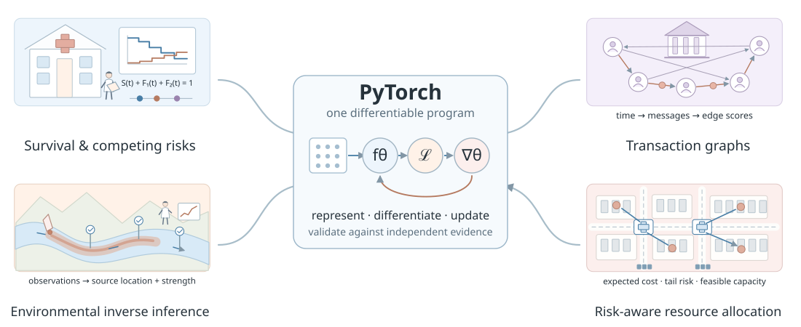
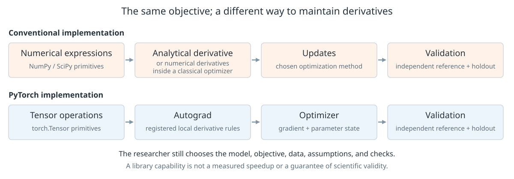
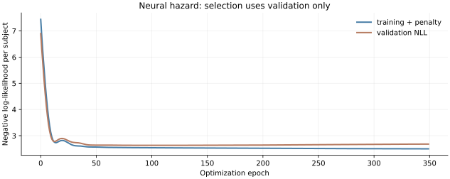
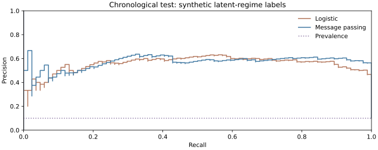
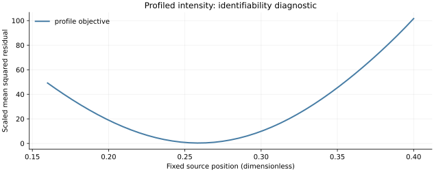
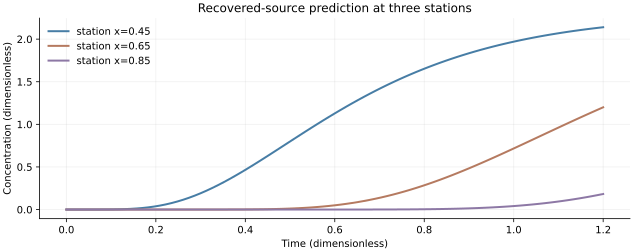
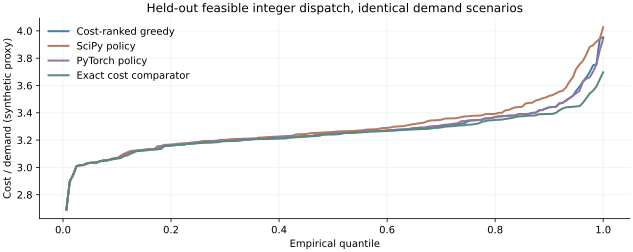

PyTorch: From Computational Graphs to Scientific Inference and Intelligent Decisions
An illustrated mathematical and empirical investigation through automatic differentiation, probabilistic survival models, financial networks, environmental inverse problems, and decision optimization.
A tensor can represent a cohort, an account neighborhood, a river, or a resource policy. The numbers become useful when a model connects them to a precise question. PyTorch provides a shared language for composing those models and differentiating their objectives.
This monograph follows that language from a single hand-calculated derivative to four complete scientific investigations. Every empirical claim leads back to executable source and recorded outputs.
Seven chapters · original editable illustrations · complete CPU experiments · three independent simulation seeds

Understanding PyTorch: Tensors, Derivatives, and Computational Graphs
A framework becomes understandable when its operations can be traced to arithmetic, its derivatives can be checked, and its responsibilities can be separated from the researcher’s decisions.
1.1 What is PyTorch?
Start with a scientific function: observations and adjustable parameters enter; predictions or losses leave. Ordinary Python can express the function, but its scalar loops do not automatically organize large array operations or propagate derivatives. NumPy supplies efficient multidimensional arrays and numerical kernels. SciPy adds established solvers, statistical routines, and optimization. PyTorch joins tensor operations, differentiation, model components, and device execution in a Python-oriented system.
A tensor is a numerical array with shape, dtype, and device. A computational graph records dependencies between operations. Automatic differentiation follows those dependencies to calculate derivatives of the executed function. A neural network is one possible parameterized function; a likelihood or a time-stepping simulator is another. Differentiable scientific programming puts such calculations inside a larger objective, so scientific parameters can be estimated by gradients.
| Component | Responsibility | What the researcher still supplies |
|---|---|---|
torch, Tensor | Array creation, linear algebra, reductions, devices | Meaning and dimensions of every axis |
torch.autograd | Derivatives through supported executed operations | A connected graph and a mathematically appropriate objective |
torch.nn | Modules, trainable layers, activations, losses | Architecture, assumptions, and evaluation design |
torch.optim | Parameter updates and optimizer state | Learning rates, constraints, and stopping criteria |
torch.utils.data | Datasets, sampling, batches, and loaders | Leakage-free splits and valid preprocessing |
torch.func | Composable transformations of functions | Purity and batch semantics |
torch.compile | Capture and backend compilation when supported | Compatibility checks and workload-specific measurement |
GPU acceleration becomes relevant when tensor work is sufficiently parallel and large enough to offset transfer, launch, and synchronization costs. Device availability is not a performance result. The experiments here use a verified CPU build; no accelerator result is inferred from the existence of a GPU API. See the official documentation for the public interfaces.
1.2 Why use PyTorch when NumPy already exists?
Evaluate sin(0.7), sum a vector, or multiply two matrices: NumPy is already an excellent solution. Fit a straight line: a least-squares solver may be clearer and more accurate than iterative gradient descent. Even a substantial statistical likelihood can be implemented with NumPy and optimized by SciPy. The question becomes interesting when a model’s many composed operations change repeatedly and each change must preserve correct derivatives, axis reductions, and shared-parameter accumulation.
For a differentiable loss with 72 parameters, one can derive a vectorized gradient once and pass it to L-BFGS. That is the strong baseline used in Chapter 2. Replacing a linear predictor with several nonlinear layers then requires corresponding derivative maintenance, a separate automatic differentiation library, or numerical differentiation. PyTorch lets the forward tensor program define the derivatives through registered operation rules. It reduces one category of bookkeeping; it does not remove the need to test the program.

Which responsibilities change?
Interactive laboratoryBrowser illustration of software responsibilities; this is not a benchmark.
Conventional implementation
PyTorch implementation
Finite differences provide a useful independent check, but estimating every gradient coordinate needs repeated evaluations and a step-size choice. Analytical derivatives can be faster and reveal structure. Reverse-mode differentiation is especially convenient for a scalar loss with many parameters; a specialized statistical or optimization package can still be the more maintainable solution. The ability to write less derivative code is evidence about development, not automatically evidence about runtime or prediction quality.
The four applications distinguish Level A, equivalent mathematical work with separately checked implementations, from Level B, different models or decision procedures evaluated on the same information. A learned model’s improvement would establish something about the model and experiment, not a universal advantage of its software framework.
1.3 Tensors, dimensions, broadcasting, and storage
A scalar has shape (); a vector of p entries has shape (p,); a matrix has two axes. A tensor’s rank here means its number of axes, rather than matrix rank. A three-dimensional cohort tensor might have axes subject × time × event category. Axis names belong in the scientific description because an equally sized transpose can silently change the meaning of a computation.
Matrix multiplication contracts the shared feature axis. Each output entry is one row–column dot product.
The inner dimension p is the index being summed. Elementwise multiplication instead multiplies aligned entries and does not sum that index. Broadcasting aligns dimensions from the right; corresponding sizes must agree or one must equal 1. Thus a vector of p feature offsets adds to every row of an n × p array, whereas an n-vector generally needs shape n × 1 to offset rows.
A broadcast offset is a vector, not a new matrix of independently chosen values. For an \(n\times p\) feature matrix and a \(p\)-vector, the indexed rule is:
Broadcasting shares the same feature offset across rows; the workbench also exposes incompatible axes.
The tensor workbench
Interactive laboratoryBrowser-calculated small matrices, following the stated NumPy/PyTorch shape rules. Change dimensions to reveal valid and invalid combinations.
Dtype governs representation and arithmetic. Float64 stores eight bytes per element, float32 four, and float16 two; supported operations and numerical error vary. Device identifies where storage and computation reside. Mixing incompatible devices or asking integer tensors to carry gradients is an error rather than an automatic scientific correction. Raw storage is the element count times bytes per element. Peak process memory also contains inputs, outputs, saved backward values, gradients, optimizer moments, libraries, and allocator overhead.
Reshaping preserves logical element order and may return a view when strides permit; it can allocate otherwise. Permuting axes changes index interpretation and often creates a strided view. Calling a view contiguous can then allocate a copy. The workbench shows actual entries so that these distinctions are visible. Large batches may improve throughput while increasing memory, and a smaller dtype can change a likelihood or inverse gradient enough to require independent accuracy checks.
1.4 A complete numerical derivative and update
Fit one observation with an affine predictor. Here x and y are fixed data; w and b are parameters. The half-squared loss measures one prediction error, not uncertainty about a population parameter. We choose a particularly small example so every intermediate value can be checked without trusting software.
The data and initial parameters specify one affine prediction, its residual, and a half-squared loss.
Multiplication gives wx=2, adding b leaves the prediction at 2, and subtracting y gives residual −3. Squaring and dividing by two yields 4.5. The chain rule works backward through these same operations: the loss sensitivity to the residual is r, the residual sensitivity to the prediction is 1, and the prediction sensitivities to w and b are x and 1.
The chain rule multiplies the residual sensitivity by the local sensitivity of the affine predictor.
Both parameter coordinates use the old gradient. The final two lines recompute prediction and loss after the simultaneous update.
Both gradients use the old parameters. Updating w before computing the bias gradient would define another procedure. The gradient is a sensitivity vector; multiplying it by a learning rate and subtracting it defines an update. For this observation the residual update is \(r^\prime=(1-5\eta)r\), so descent occurs for 0<\(\eta\)<0.4, the exact fit occurs at \(\eta\)=0.2, and \(\eta\)=0.4 preserves the squared residual while reversing its sign. This unusually simple quadratic gives a checkable step-size lesson, not a general neural-network guarantee.
NumPy: exact forward arithmetic and analytical gradientPythonCollapse Code ▴
Canonical function/class excerpt; not independently executable. The complete program supplies imports and supporting definitions. Download all Python sources and setup.
def manual_step(w=1., b=0., rate=.05):
x, y = 2., 5.
prediction = w*x+b
residual = prediction-y
gradient = np.array([residual*x, residual])
updated = np.array([w, b])-rate*gradient
return dict(prediction=prediction, residual=residual, loss=.5*residual**2,
gradient=gradient, updated=updated,
updated_prediction=float(updated[0]*x+updated[1]),
updated_loss=float(.5*(updated[0]*x+updated[1]-y)**2))
PyTorch: the same loss, gradients, and simultaneous updatePythonCollapse Code ▴
Canonical function/class excerpt; not independently executable. The complete program supplies imports and supporting definitions. Download all Python sources and setup.
def autograd_step():
theta = torch.tensor([1., 0.], requires_grad=True)
loss = .5*(2*theta[0]+theta[1]-5)**2
loss.backward()
gradient = theta.grad.detach().numpy().copy()
with torch.no_grad():
theta -= .05*theta.grad
return gradient, theta.detach().numpy()
1.5 Six ways to obtain derivatives
An analytical derivative is a mathematical formula derived by hand. Symbolic differentiation manipulates an expression tree to produce another expression. Finite differences infer a derivative from nearby function values. Automatic differentiation instead propagates derivative rules through the operations of a numerical program, using floating-point arithmetic. It has rounding error but no finite-difference truncation step.
| Method | Basic mechanism | Useful condition / limitation |
|---|---|---|
| Analytical | Derive and implement a formula | Transparent and efficient when algebra is manageable; changes require maintenance |
| Symbolic | Transform expressions by differentiation rules | May reveal exact structure; expressions or control flow can become difficult |
| Forward difference | \(\frac{f(x+h)-f(x)}{h}\) | First-order truncation; one extra evaluation per coordinate |
| Central difference | \(\frac{f(x+h)-f(x-h)}{2h}\) | Second-order truncation for smooth f; two evaluations per coordinate |
| Forward-mode AD | Propagate a tangent direction \(J\boldsymbol v\) | Attractive for few inputs or directional sensitivities |
| Reverse-mode AD | Propagate a cotangent \(\boldsymbol u^\top J\) | Attractive for a scalar loss with many parameters; saves intermediate values |
The output dimension of the inner map matches the input dimension of the outer map. Their Jacobians multiply in that order.
A Jacobian has one row per output and one column per input. A scalar-output gradient is its sensitivity to each input; a Hessian differentiates that gradient again. A JVP multiplies J by an input direction without building J; a VJP multiplies an output sensitivity by J. Reverse mode starts with loss sensitivity 1 and accumulates contributions along all paths. Several passes are needed to build a full multi-output Jacobian, whereas a scalar loss usually needs one backward sweep.
For central differences, truncation error is typically proportional to \(h^2\) and rounding amplification to machine precision divided by h. Taking h ever smaller eventually loses useful digits in the subtraction. The next experiment differentiates sin(x) at x=0.7; the independent answer is cos(0.7). Its displayed error comes from actual browser double-precision arithmetic.
How small should a finite-difference step be?
Interactive laboratoryBrowser-calculated central differences. Python independently exports the same step sweep.
Autograd differentiates the path actually taken by Python control flow. A branch test, integer index, or discrete argmax need not have a useful derivative with respect to its decision. ReLU has a kink; a library convention at zero is not evidence that a classical derivative exists there. Independent gradient checks should therefore use smooth points away from kinks and compare several step sizes.
1.6 Walk through the computational graph
A graph is a representation of a function’s dependencies. In the scalar example, the observed input and parameters enter multiplication and addition; the target enters subtraction; the residual enters the loss. The reverse sweep attaches a sensitivity to each intermediate node. The derivative at a shared input is the sum of downstream path contributions, rather than a single overwritten value.
One observation, nine computational stages
Interactive laboratoryBrowser-calculated forward values and analytical local derivatives. The initial η=0.05 case is independently validated in Python.
Blue nodes identify the active forward operation, and coral reverse markings identify sensitivities. The update uses the derivatives evaluated at the initial parameters; the final stage evaluates the new function value. Pause, Previous, Next, and Restart let a reader inspect a calculation rather than watch decorative movement. Increasing the rate to 0.4 exposes the quadratic’s equal-loss boundary.
In a larger program, PyTorch normally builds its autograd graph during execution. Operations can save values needed by their backward rules. Calling backward() accumulates gradients in leaf tensors that require them; it does not change parameters. Calling detach(), converting a tensor into NumPy inside the intended derivative path, or using a value only as an integer choice can sever that path. The graph answers how the implemented loss depends on the implemented parameters. It cannot diagnose a mistaken scientific loss.
1.7 Exploring the Python API and its documentation
Learning a numerical library includes learning how to ask it precise questions. Start by checking the interpreter, installed version, and available devices. Use dir() to discover candidate names, then narrow to public interfaces. inspect.signature() reveals parameter names and defaults where a Python signature is exposed; inspect.getdoc(), .__doc__, and help() explain the object. Native extension objects may not expose an inspectable signature or Python source.
The diagram’s namespace nodes link to official documentation. Inspect torch.nn.Linear as a class and its forward method as an implementation. .__class__ identifies a value’s type; .__module__ helps locate its definition. inspect.getsource() is useful when Python source exists, but source layout is not a stable public contract. Underscore-prefixed names and undocumented internals may change. Prefer the documented public interface for research code.
A complete, bounded Python documentation explorationPythonCollapse Code ▴
Complete executable file. Application programs require the supplied sibling common.py and the documented dependencies; keep these files together. Download all Python sources and setup.
"""A bounded, directly executable tour of public Python documentation tools."""
import contextlib
import inspect
import io
import torch
def main():
print('PyTorch:', torch.__version__, '| CUDA:', torch.cuda.is_available())
tensor = torch.tensor([1., 2.])
print('Class:', tensor.__class__, '| Module:', torch.nn.Linear.__module__)
print('Public tensor methods:', [n for n in dir(torch.Tensor)
if not n.startswith('_')][:12])
for obj in (torch.Tensor, torch.nn.Linear, torch.optim.Adam, torch.autograd.grad):
print('\nObject:', obj.__name__)
try:
print('Signature:', inspect.signature(obj))
except (TypeError, ValueError):
print('Native signature unavailable; consult the versioned documentation.')
print('Doc:', (inspect.getdoc(obj) or '')[:260])
print('__doc__ present:', bool(obj.__doc__))
captured = io.StringIO()
with contextlib.redirect_stdout(captured):
help(torch.nn.Linear)
print('\nhelp() excerpt:', captured.getvalue()[:320])
try:
print('\nPython source excerpt:', inspect.getsource(torch.nn.Linear.forward)[:320])
except (OSError, TypeError):
print('Source is not available in this installation.')
print('Documentation: https://docs.pytorch.org/docs/stable/')
if __name__ == '__main__':
main()
This is the one substantial code component expanded by default. It captures and truncates help output and catches unavailable signatures or source. Save and execute the downloaded file with the environment used for the experiments. Its version output selects the appropriate documentation: a stable web URL may point to a newer release later. Here the executed build is 2.15.0+cpu. Documentation inspection checks usage; the numerical tests check whether the chosen usage computes the intended quantity.
1.8 Neural networks as composed differentiable models
A neural network is a family of functions whose coefficients are learned. An affine layer takes weighted sums and offsets. A nonlinear activation prevents a stack of affine layers from collapsing to one affine map. Parameter sharing reuses coefficients across observations or locations; it is a modeling assumption that can reduce the number of independently estimated quantities.
The activation acts coordinatewise on the three hidden preactivations. Bias and weight dimensions match the implemented network.
The common activations are \(\operatorname{ReLU}(z)=\max(0,z)\) and \(\operatorname{sigmoid}(z)=1/(1+\exp(-z))\); \(\tanh(z)\in(-1,1)\) is another smooth choice. Softmax maps an entire vector of logits into positive probabilities summing to one. The output transformation must match the scientific variable and loss: a real-valued response may use squared error, a Bernoulli outcome uses a stable logit-based binary cross-entropy, and mutually exclusive categories use log-softmax or cross-entropy. A raw logit is not a probability.
Inspect the arithmetic inside one hidden neuron
Interactive laboratoryBrowser-calculated fixed-weight network, not a trained predictor. Signed line widths represent actual weights.
With tanh at x=(0.5,1), the preactivations are (0.1,0.4,1.05). Inspecting each unit makes the shared calculation concrete. The output layer is linear, so its value can fall outside [0,1]. Turning it into a probability would require an output transformation and a corresponding interpretation. PyTorch can represent this network, but it is equally capable of evaluating the non-neural competing-risk likelihood or the river stencil. Confusing the framework with one particular model hides those possibilities.
1.9 Modules, parameters, gradients, and optimizer state
An nn.Module defines a reusable function and registers submodules. An nn.Parameter is a tensor registered as trainable model state. Buffers are registered values, such as normalization statistics, that are part of the module state without being optimizer parameters by default. A forward method defines the calculation; the loss maps its outputs and observations to a scalar objective.
optimizer.zero_grad(set_to_none=True) clears accumulated parameter gradients before the next backward pass. A missing gradient and a tensor containing zeros can have different optimizer semantics, so test conditional branches. loss.backward() computes and accumulates gradients. optimizer.step() uses them to update parameters. Adam also maintains running first and second moment estimates and an update count; those are optimizer state, distinct from the current gradient and from the model parameters.
The parameter displacement is the negative gradient scaled by the learning rate. Both can vanish at a stationary point; they are different mathematical roles.
model.train() and model.eval() control behaviors of components such as dropout and batch normalization. Evaluation mode does not turn off gradient recording. torch.no_grad() prevents recording within its context; torch.inference_mode() can also remove additional tracking overhead and creates tensors with stricter subsequent autograd-use restrictions. They are not interchangeable in every workflow. The executed programs use evaluation mode and inference contexts for held-out prediction, while preserving graph construction during fitting. The autograd mechanics note documents these distinctions.
Loss reduction matters. Summing all bins and dividing by subjects estimates per-subject likelihood; averaging over every bin instead changes the scale and can change how regularization competes with fitting. In the graph model, mean binary cross-entropy gives every candidate edge equal weight within a snapshot. Such conventions belong in the mathematical specification, not only in a training loop.
1.10 Data pipelines, randomization, and reproducibility
A Dataset defines how examples are indexed and returned; a DataLoader organizes sampling, batches, worker processes, and collation. These conveniences do not determine the statistical unit of independence. Subjects can be split randomly in an independent synthetic cohort, whereas transaction histories require time-respecting snapshots. A normalization statistic fitted on test data is leakage even if it has no trainable neural parameter.
The supplied small CPU studies deliberately use full-cohort or snapshot batches so the reduction and chronology are visible. Larger data can be exposed through TensorDataset/DataLoader without changing the likelihood. Shuffling should occur within an authorized training split, never across a boundary that was intended to represent future prediction. In multiprocessing loaders, initialize worker random generators and record sampler settings; changing the number of workers can alter the random stream.
The experiments fix NumPy generator seeds, torch seeds, float64 precision, one PyTorch thread, and deterministic algorithm selection. Benchmark runs also limit numerical-library threadpools to one. A seed is not a promise of identical results across releases, hardware, or CPU/GPU kernels: operation order and algorithms can differ. Repeated independent simulation seeds assess sensitivity to data and initialization, while reproducing one seed in one environment checks a narrower software claim. See the official reproducibility note.
A state_dict records named parameters and buffers; an optimizer state dictionary records its separate state. Save architecture/configuration and preprocessing with their provenance. The foundation test serializes weights into memory, loads with weights_only=True, and asserts identical predictions. That restricted load reduces exposure to arbitrary pickle behavior; it does not make unknown files universally safe. Load only trusted research artifacts and verify their source, expected tensor shapes, and size.
1.11 Advanced differentiation with torch.func
Once a model is viewed as a function, differentiation can itself become a transformation that returns a function. grad returns scalar gradients; jacrev and jacfwd build Jacobians by reverse and forward mode. jvp and vjp return directional derivatives without explicitly storing the full Jacobian. vmap maps compatible operations across a batch dimension; it is not a guarantee that arbitrary Python side effects or data-dependent branching will vectorize.
Input coordinates index Jacobian columns; output coordinates index its rows. Trigonometric arguments are in radians.
For direction \(\boldsymbol v=(1,-1)^\top\), the JVP is \(J\boldsymbol v=(-1.7,\,4-\cos(0.3))^\top\). With the output seed \(\boldsymbol u=(1,-1)^\top\), the column VJP is \(J_f^\top\boldsymbol u=(-3.7,\,2-\cos(0.3))^\top\). The row convention is its transpose, \(\boldsymbol u^\top J_f=(J_f^\top\boldsymbol u)^\top\). Their unequal values illustrate why direction and orientation matter. The supplied function-transform test independently checks the matrix identities, reverse/forward Jacobian parity, a forward-over-reverse Hessian equal to 2I, and loop versus batched gradients for a sum of sines.
The same Jacobian; two directions of sensitivity
An analytical example, with an input direction and an output seed in distinct spaces.
A two-output function
\[f(\boldsymbol{x})=\begin{bmatrix}x_1x_2\\x_1^2+\sin x_2\end{bmatrix},\qquad\boldsymbol{x}=\begin{bmatrix}2\\0.3\end{bmatrix}\]Rows are outputs; columns are inputs
\[J_f(\boldsymbol{x})=\begin{bmatrix}x_2&x_1\\2x_1&\cos x_2\end{bmatrix}=\begin{bmatrix}0.3&2\\4&0.95533649\end{bmatrix}\]Input tangent
\[\boldsymbol{v}=\begin{bmatrix}1\\-1\end{bmatrix}\]\[\boldsymbol{v}\in\mathbb R^2\]Combine the Jacobian columns
\[J_f\boldsymbol{v}=\begin{bmatrix}0.3(1)+2(-1)\\4(1)+\cos(0.3)(-1)\end{bmatrix}\]Output tangent
\[J_f\boldsymbol{v}=\begin{bmatrix}-1.7\\3.04466351\end{bmatrix}\]\[J_f\boldsymbol{v}\in\mathbb R^2\]Input-space sensitivity
\[J_f^\top\boldsymbol{u}=\begin{bmatrix}-3.7\\1.04466351\end{bmatrix}\]\[J_f^\top\boldsymbol{u}\in\mathbb R^2\]Combine the Jacobian rows
\[J_f^\top\boldsymbol{u}=\begin{bmatrix}0.3(1)+4(-1)\\2(1)+\cos(0.3)(-1)\end{bmatrix}\]Output cotangent seed
\[\boldsymbol{u}=\begin{bmatrix}1\\-1\end{bmatrix}\]\[\boldsymbol{u}\in\mathbb R^2\]Compose grad, vmap, Jacobians, JVP, VJP, and functional_callPythonCollapse Code ▴
Canonical function/class excerpt; not independently executable. The complete program supplies imports and supporting definitions. Download all Python sources and setup.
def function_transforms():
from torch.func import grad, vmap, jacrev, jacfwd, jvp, vjp, functional_call
def f(x):
return torch.stack((x[0]*x[1], x[0]**2+torch.sin(x[1])))
x = torch.tensor([2., .3])
jacobian = jacrev(f)(x)
assert torch.allclose(jacobian, jacfwd(f)(x))
direction = torch.tensor([1., -1.])
_, tangent = jvp(f, (x,), (direction,))
_, pullback = vjp(f, x)
assert torch.allclose(tangent, jacobian@direction)
assert torch.allclose(pullback(direction)[0], direction@jacobian)
batch = torch.arange(12.).reshape(4, 3)/10
scalar = lambda z: z.sin().sum()
loop = torch.stack([grad(scalar)(row) for row in batch])
batched = vmap(grad(scalar))(batch)
assert torch.equal(loop, batched)
layer = torch.nn.Linear(3, 1)
params = dict(layer.named_parameters())
assert torch.equal(functional_call(layer, params, (batch,)), layer(batch))
hessian = jacfwd(jacrev(lambda z: (z*z).sum()))(x)
assert torch.equal(hessian, 2*torch.eye(2))
return dict(jacobian=jacobian.numpy(), jvp=tangent.numpy(),
vjp=pullback(direction)[0].numpy(), vmap_max_error=float((loop-batched).abs().max()))
functional_call treats a module’s parameters and buffers as explicit arguments to its forward calculation. That lets transforms differentiate over parameters instead of mutating a global model between calls. The torch.func reference describes the transformation interfaces and limitations. Numerical equivalence is verified here; a loop-to-vmap speedup is not measured or assumed. Per-sample gradients can also use much more memory than an averaged batch gradient.
1.12 Eager execution, compilation, and honest timing
In eager execution, Python invokes tensor operations as the program runs. torch.compile attempts to capture compatible work and pass it to a backend. An optimizing backend can fuse work or reduce repeated overhead, while graph breaks partition unsupported Python behavior. Changing shapes or control-flow conditions can trigger additional capture. Compilation therefore has initialization, first-call, warm-up, and steady-state costs that must be separated.
The local compatibility probe evaluates the same 256 × 32 float64 function, rowwise Σ sin(x)x, in NumPy, eager PyTorch, and available compiled contexts. It tries Inductor and also AOT eager. AOT eager exercises capture and differentiation plumbing without being an optimizing code-generation backend; it must not be presented as equivalent to successful Inductor acceleration. The live table below is generated only from the executed probe.
Recorded compatibility results load over HTTP. The canonical compilation JSON is available independently.
A fast steady-state call can still lose overall when a short job includes compilation overhead. The break-even call count, when the compiled steady time is smaller, is approximately first-call overhead divided by the per-call time saving. If the compiled call is slower, there is no positive break-even point under that simple comparison. These small measurements do not determine the best backend for a larger model.
Complete eager / compilation compatibility experimentPythonCollapse Code ▴
Complete executable file. Application programs require the supplied sibling common.py and the documented dependencies; keep these files together. Download all Python sources and setup.
"""Eager versus torch.compile, with initialization and first-call capture reported separately."""
from __future__ import annotations
import os
import tempfile
import time
import numpy as np
import torch
from threadpoolctl import threadpool_limits
from benchmark_experiments import measure
from common import cli, configure, environment, write_json
def run(seed=42, quick=False):
configure(seed)
rng = np.random.default_rng(seed)
x = rng.normal(size=(256, 32))
tx = torch.tensor(x)
def numpy_function():
return np.sum(np.sin(x)*x, axis=1)
def torch_function(value):
return (value.sin()*value).sum(1)
np.testing.assert_allclose(numpy_function(), torch_function(tx).numpy(), atol=2e-14)
result = dict(status='executed compilation compatibility probe', environment=environment(), shape=list(x.shape),
numpy=measure(numpy_function), eager=measure(lambda: torch_function(tx)), compiled=[])
with tempfile.TemporaryDirectory(prefix='pytorch-monograph-compile-', ignore_cleanup_errors=True) as cache:
os.environ['TORCHINDUCTOR_CACHE_DIR'] = cache
for backend in (['aot_eager'] if quick else ['inductor', 'aot_eager']):
try:
begin = time.perf_counter()
compiled = torch.compile(torch_function, backend=backend, fullgraph=True)
wrapper_seconds = time.perf_counter()-begin
begin = time.perf_counter()
actual = compiled(tx)
first_seconds = time.perf_counter()-begin
np.testing.assert_allclose(actual.numpy(), numpy_function(), atol=3e-14, rtol=1e-12)
measured = measure(lambda: compiled(tx))
result['compiled'].append(dict(backend=backend, status='executed', wrapper_seconds=wrapper_seconds,
first_call_seconds=first_seconds, steady_state=measured,
note='aot_eager exercises capture/autodiff plumbing without an optimizing code-generation backend' if backend == 'aot_eager' else 'Inductor code generation'))
except Exception as error:
result['compiled'].append(dict(backend=backend, status='failed compatibility probe',
error_type=type(error).__name__, reason=str(error)[:900]))
return result
if __name__ == '__main__':
args = cli(__doc__)
with threadpool_limits(limits=1):
result = run(args.seed, args.quick)
write_json(args.output/'compilation.json', result)
print([(c['backend'], c['status']) for c in result['compiled']])
Use the compile reference, profiler, and benchmark utilities to connect a performance claim to a specified workload. On asynchronous accelerators, synchronize the relevant work or use a benchmark utility that does so. This page’s benchmarks run on a synchronous CPU context and report repetitions and dispersion.
1.13 When is PyTorch the appropriate tool?
Choose the method first, then a framework that makes that method correct and maintainable. A closed-form estimator, a classical generalized linear model, a sparse constrained solver, and a learned graph model place different demands on derivative logic, data volume, interpretation, and deployment. Numerical stability and the ability to validate assumptions can outweigh short-term implementation convenience.
| Situation | A reasonable starting point | When PyTorch adds value |
|---|---|---|
| Small array calculations | NumPy | Shared downstream differentiable computation or an existing torch pipeline |
| Classical estimation / optimization | SciPy or a domain statistics package | A custom composed likelihood with difficult derivative maintenance |
| Tabular predictive baselines | scikit-learn | Architectures or objectives beyond existing estimators |
| Large differentiable neural models | PyTorch or another autodiff framework | Tensor kernels, model state, optimizers, and accelerator support fit the workflow |
| Exact allocation / network flow | Linear programming, flow, or integer solvers | A learned or relaxed objective is justified, with independent feasibility checks |
| Physical inverse problems | A validated simulator plus sensitivities / adjoints | Supported tensor operations allow a manageable differentiable simulator |
Interpretability depends on the model, not the framework name. A linear hazard written in torch remains a linear hazard; a complex graph model written elsewhere remains complex. Precision requirements and memory may constrain accelerators. Deployment can favor an established estimator, a compiled tensor model, or a service whose preprocessing contract is easy to audit. Measure the total pipeline when latency matters.
The next chapters use four distinct capabilities: a stable masked probabilistic likelihood, shared message passing on a graph, reverse sensitivities through time integration, and batched uncertain-decision objectives. In each case, an independent conventional calculation establishes what the tensors should mean. The complete foundation program is available here for reproducing the arithmetic before entering the applications.
Complete executable program · 00_pytorch_foundations.pyPythonCollapse Code ▴
Complete executable file. Application programs require the supplied sibling common.py and the documented dependencies; keep these files together. Download all Python sources and setup.
"""Exact arithmetic, tensor shapes, autograd, torch.func, and state round-trip checks."""
from __future__ import annotations
import io
import numpy as np
import torch
from common import ROOT, cli, configure, environment, write_json
def manual_step(w=1., b=0., rate=.05):
x, y = 2., 5.
prediction = w*x+b
residual = prediction-y
gradient = np.array([residual*x, residual])
updated = np.array([w, b])-rate*gradient
return dict(prediction=prediction, residual=residual, loss=.5*residual**2,
gradient=gradient, updated=updated,
updated_prediction=float(updated[0]*x+updated[1]),
updated_loss=float(.5*(updated[0]*x+updated[1]-y)**2))
def autograd_step():
theta = torch.tensor([1., 0.], requires_grad=True)
loss = .5*(2*theta[0]+theta[1]-5)**2
loss.backward()
gradient = theta.grad.detach().numpy().copy()
with torch.no_grad():
theta -= .05*theta.grad
return gradient, theta.detach().numpy()
def function_transforms():
from torch.func import grad, vmap, jacrev, jacfwd, jvp, vjp, functional_call
def f(x):
return torch.stack((x[0]*x[1], x[0]**2+torch.sin(x[1])))
x = torch.tensor([2., .3])
jacobian = jacrev(f)(x)
assert torch.allclose(jacobian, jacfwd(f)(x))
direction = torch.tensor([1., -1.])
_, tangent = jvp(f, (x,), (direction,))
_, pullback = vjp(f, x)
assert torch.allclose(tangent, jacobian@direction)
assert torch.allclose(pullback(direction)[0], direction@jacobian)
batch = torch.arange(12.).reshape(4, 3)/10
scalar = lambda z: z.sin().sum()
loop = torch.stack([grad(scalar)(row) for row in batch])
batched = vmap(grad(scalar))(batch)
assert torch.equal(loop, batched)
layer = torch.nn.Linear(3, 1)
params = dict(layer.named_parameters())
assert torch.equal(functional_call(layer, params, (batch,)), layer(batch))
hessian = jacfwd(jacrev(lambda z: (z*z).sum()))(x)
assert torch.equal(hessian, 2*torch.eye(2))
return dict(jacobian=jacobian.numpy(), jvp=tangent.numpy(),
vjp=pullback(direction)[0].numpy(), vmap_max_error=float((loop-batched).abs().max()))
def run(seed=42):
configure(seed)
exact = manual_step()
np.testing.assert_array_equal(exact['gradient'], [-6., -3.])
np.testing.assert_allclose(exact['updated'], [1.3, .15], atol=1e-15, rtol=0)
assert exact['loss'] == 4.5 and exact['updated_loss'] == 2.53125
gradient, theta = autograd_step()
np.testing.assert_allclose(gradient, exact['gradient'], atol=0, rtol=0)
np.testing.assert_allclose(theta, exact['updated'], atol=1e-15, rtol=0)
x, w = torch.ones(3, 2), torch.ones(2, 4)
assert (x@w).shape == (3, 4)
assert (x+torch.tensor([1., 2.])).shape == (3, 2)
a = torch.arange(6).reshape(2, 3)
assert not torch.equal(a.reshape(3, 2), a.permute(1, 0))
model = torch.nn.Linear(2, 1)
stream = io.BytesIO()
torch.save(model.state_dict(), stream)
stream.seek(0)
restored = torch.nn.Linear(2, 1)
restored.load_state_dict(torch.load(stream, weights_only=True))
assert torch.equal(model(x), restored(x))
# Central differences: independently check a smooth scalar derivative.
steps = np.logspace(-1, -12, 12)
errors = [abs((np.sin(.7+h)-np.sin(.7-h))/(2*h)-np.cos(.7)) for h in steps]
return dict(status='executed PyTorch and analytical validation', seed=seed,
environment=environment(), exact=exact, transforms=function_transforms(),
finite_difference=dict(steps=steps, absolute_errors=errors),
checks=['exact scalar update', 'autograd parity', 'shapes and broadcasting',
'reshape versus permutation', 'torch.func identities', 'weights_only round-trip'])
if __name__ == '__main__':
args = cli(__doc__)
result = run(args.seed)
write_json(args.output / 'foundations.json', result)
print('Foundations:', ', '.join(result['checks']))
Biostatistics: Survival Analysis and Competing Risks
Incomplete follow-up changes the likelihood. A coherent competing-risk model keeps conditional hazards, event-free survival, and cause-specific cumulative incidence mathematically consistent.
2.1 The scientific question: which event, and when?
Consider a cohort whose members can experience one of two mutually exclusive first events, or remain event-free until observation ends. The aim is to estimate each event’s probability by a future horizon, conditional on baseline covariates. An ordinary binary label discards the timing and treats incomplete follow-up incorrectly: a participant observed event-free for three bins does not provide the same information as one followed for all twelve.
The full experiment generates 1,800 independent synthetic subjects. Two standardized covariates represent age-like baseline variation and a risk marker; neither is a real medical measurement. The generator includes nonlinear marker effects and time-dependent logits. A model that assumes linear covariate effects is therefore a deliberately interpretable approximation, while a nonlinear extension tests whether extra flexibility improves held-out evidence.
We first define the observable data and likelihood, then implement exactly the same parametric likelihood twice. Only after checking those calculations do we fit a small neural hazard. This order prevents a modeling change from masquerading as a framework comparison. A probability model can be numerically correct yet scientifically inadequate if censoring, selection, or covariate measurement differs from its assumptions.
2.2 Observation, censoring, hazard, and cumulative incidence
An event occurring in the censoring bin is observed under the end-of-bin convention. Otherwise the observed cause is zero.
Time is discrete. An event in bin t is observed if the subject was under observation through that bin; censoring at the end of bin t establishes survival through t. If event and censoring share a bin, the event is observed. Administrative follow-up ends at H=12. An event after H is unobserved, and the corresponding subject contributes survival through H.
The cause-specific conditional event probability is a discrete hazard: the chance of cause k during a bin, given no prior event. Survival is the probability of remaining free of either event. Cumulative incidence is the unconditional probability of having experienced a particular first-event cause by a horizon. The hazard for cause 1 is not itself its cumulative probability; survival from both causes weights whether the subject remains available to experience it.
Independent censoring means that, conditional on relevant covariates, ending observation does not reveal additional information about the latent event process. Positivity requires a nonzero chance of remaining observed through the horizon. Our generator makes C independent and uses a known distribution. Real studies need a defensible censoring model and a carefully specified target population. Competing events are outcomes, not ordinary losses to follow-up.
Here \(T_i\) is the latent first-event bin, \(K_i\) its cause, and \(C_i\) the bin at whose end observation stops. The equality case observes the event, matching the generator and likelihood.
2.3 Construct coherent competing-risk probabilities
For subject i and bin t, let \(p_{ikt}\) be the probability of outcome k conditional on being event-free before t. Category 0 means no event during the bin; categories 1 and 2 are event causes. The baseline fixes the no-event logit to zero and gives each cause a separate linear predictor for every bin. This removes the redundant common logit shift.
The no-event category supplies the reference logit. Normalize across the three categories at the same subject and time bin.
Here \(\boldsymbol x_i=(1,\operatorname{age}_i,\operatorname{marker}_i)^\top\) has length 3, \(\beta\) has shape 12 × 3 × 2, and the full logit tensor has shape N × 12 × 3. Taking two independent sigmoids would not ensure that competing event probabilities sum to at most one. The multinomial construction enforces that constraint directly.
Only subjects who remain event-free can reach the next bin. Multiplying conditional no-event probabilities gives survival from the start.
Each new cause-specific event contribution is weighted by survival through the previous bin. Cumulative incidence starts at zero.
The identity \(S_i(t)+F_{i1}(t)+F_{i2}(t)=1\) follows by induction. At the next bin, the remaining survival mass \(S_i(t-1)\) is partitioned across the three softmax categories. The Python incidence function asserts this identity for every subject and time. Nonnegative increasing incidence and nonincreasing survival are additional structural checks, not fitting metrics.
For example, conditional probabilities (0.8,0.1,0.1) in two bins give S(2)=0.64 and \(F_1(2)\)=\(F_2(2)\)=0.1+0.8×0.1=0.18. Adding raw hazards instead would incorrectly give 0.2 for each cause. The missing factor is the probability of still being event-free at the start of the second bin.
The no-event mass remaining at each step is the only mass available for later causes. Substituting the two recurrences gives the conservation law:
The three conditional probabilities sum to one; starting from survival one and incidence zero preserves the total probability budget.
A probability budget across two competing-risk bins
Conditional probabilities apply only to subjects still event-free; cumulative probabilities refer to the initial population.
Bin 1: conditional probabilities
\[(p_{0,1},p_{1,1},p_{2,1})=(0.80,0.15,0.05)\]The full population enters the first bin event-free.
Bin 2: conditional probabilities
\[(p_{0,2},p_{1,2},p_{2,2})=(0.75,0.10,0.15)\]Only the surviving probability mass of 0.80 enters the second bin.
Event-free through both bins
\[S(2)=0.80(0.75)=0.60\]Cause 1 by the end of bin 2
\[F_1(2)=0.15+0.80(0.10)=0.23\]Cause 2 by the end of bin 2
\[F_2(2)=0.05+0.80(0.15)=0.17\]Cause 1 observed in bin 2
\[\mathscr L_{\mathrm{event}}=p_{0,1}p_{1,2}=0.08\]No event in bin 1; cause 1 in bin 2.
Censored at the end of bin 2
\[\mathscr L_{\mathrm{censor}}=p_{0,1}p_{0,2}=0.60\]Event-free through the entirety of both observed bins.
2.4 Derive the likelihood from the observation convention
A cause-k event in bin t requires no event in bins 1 through t−1, then that cause in t. An end-of-bin censor in t requires no event in every observed bin through t. We condition on the observation mechanism under independent censoring, so its separate probability factor does not enter estimation of the event-model parameters.
An observed event contributes survival before its bin and the selected event probability. End-of-bin censoring contributes survival through the complete bin.
Define \(R_{it}\)=1 when t≤observed time. Let \(Y_{it}\) be category 0 for each observed event-free bin and the observed event cause for the final event bin. Then a masked category log-likelihood encodes both cases. Bins after the event or censor contribute nothing; treating them as no-event observations would create false information.
The risk mask selects observed bins. Per-subject normalization and the squared coefficient penalty match the implemented objective.
The category residual is probability minus the observed-event indicator. The last term is the derivative of the ridge penalty.
The derivative follows by differentiating log-softmax: the selected-category indicator subtracts the probability. Gathering the selected log probability and multiplying by a Boolean risk mask produces the tensor calculation. Compute log probabilities with logsumexp/log-softmax rather than taking the logarithm of an underflowed softmax. A censored subject in bin 3 under constant \(p_0\)=0.8 contributes −3 log(0.8); a cause-1 event in bin 3 with \(p_1\)=0.1 contributes −2 log(0.8)−log(0.1). The validation suite checks these distinct cases.
2.5 A strong NumPy and SciPy baseline
The conventional model evaluates the vectorized multinomial likelihood and its analytical gradient. SciPy L-BFGS-B receives both; it does not estimate 72 separate derivatives by slow scalar loops. Training uses 60% of randomly permuted subjects, with 20% for validation and 20% reserved for final testing. The baseline has 72 coefficients, with time-bin-specific linear effects and a fixed ridge penalty.
NumPy: stable masked likelihood and analytical gradientPythonCollapse Code ▴
Canonical function/class excerpt; not independently executable. The complete program supplies imports and supporting definitions. Download all Python sources and setup.
def numpy_objective(flat, x, times, causes, penalty=.001):
weights = flat.reshape(H, x.shape[1], 2)
event_logits = np.einsum('np,hpk->nhk', x, weights)
logits = np.concatenate([np.zeros((*event_logits.shape[:2], 1)), event_logits], axis=2)
logp = logits-logsumexp(logits, axis=2, keepdims=True)
risk, label = targets(times, causes)
selected = np.take_along_axis(logp, label[:, :, None], axis=2)[:, :, 0]
value = -(selected*risk).sum()/len(x)+penalty*np.sum(weights**2)/2
residual = np.exp(logp)
residual[np.arange(len(x))[:, None], np.arange(H)[None, :], label] -= 1
gradient = np.einsum('np,nhk->hpk', x, residual[:, :, 1:]*risk[:, :, None])/len(x)
return float(value), (gradient+penalty*weights).ravel()
A baseline of this kind can be a practical final model: its coefficient structure is explicit, evaluation is inexpensive, and a domain analyst can examine covariate effects separately by time and cause. More coefficients do not imply more trustworthy predictions; sparse event counts in late bins can make estimates unstable. Sharing information across time or using a simpler hazard family may be preferable when data are limited.
The generator’s age-like and marker variables already share a known scale. No outcome information is used in their construction or in the split. Real data would require train-only preprocessing, missingness handling, and a protocol for the time origin. A software framework does not fix immortal-time bias, an inappropriate entry cohort, or post-baseline covariates that were unavailable at prediction.
2.6 What changes when we use PyTorch?
Level A: the same likelihood. Replace NumPy operations with float64 tensors and request the parameter gradient from autograd. The data, initialization, ridge penalty, parameterization, optimizer family, and stopping tolerances stay the same. Both versions feed a value-and-gradient callable into SciPy L-BFGS-B, isolating derivative implementation from optimizer choice.
PyTorch: identical loss, automatically generated derivativesPythonCollapse Code ▴
Canonical function/class excerpt; not independently executable. The complete program supplies imports and supporting definitions. Download all Python sources and setup.
def torch_objective(weights, x, times, causes, penalty=.001):
event_logits = torch.einsum('np,hpk->nhk', x, weights)
logits = torch.cat([torch.zeros((*event_logits.shape[:2], 1)), event_logits], dim=2)
logp = torch.log_softmax(logits, dim=2)
risk = torch.arange(1, H+1)[None, :] <= times[:, None]
label = torch.zeros(risk.shape, dtype=torch.long)
events = causes > 0
label[torch.where(events)[0], times[events]-1] = causes[events]
return -(logp.gather(2, label[:, :, None]).squeeze(2)*risk).sum()/len(x)+penalty*weights.square().sum()/2
| Quantity | Executed seed-42 evidence |
|---|---|
| Maximum analytical / autograd gradient difference | 4.996e-16 |
| Conventional final penalized training objective | 2.64607873 |
| PyTorch-equivalent final objective | 2.64607873 |
| Maximum final coefficient difference | 2.288e-11 |
| Matched numerical setup | Same training subjects, zero initialization, float64 CPU, L-BFGS-B and ridge |
Level B: a nonlinear hazard. A two-input, 16-hidden-unit tanh network returns 12 × 3 logits per subject. Adam trains it for 350 full-batch epochs, with the best validation likelihood restoring its state. Its 660 parameters and separate weight penalty change the statistical model. Any predictive difference is therefore evidence about the chosen model, regularization, and sample, rather than autograd alone.
A neural extension after equivalent-model verificationPythonCollapse Code ▴
Canonical function/class excerpt; not independently executable. The complete program supplies imports and supporting definitions. Download all Python sources and setup.
class NeuralHazard(torch.nn.Module):
def __init__(self):
super().__init__()
self.network = torch.nn.Sequential(torch.nn.Linear(2, 16), torch.nn.Tanh(), torch.nn.Linear(16, H*3))
def forward(self, x):
return self.network(x[:, 1:]).reshape(-1, H, 3)
The torch version reduces custom derivative maintenance when replacing linear logits with nonlinear ones. It does not provide a survival-specific likelihood automatically: the risk mask and censor timing are still explicitly implemented. These checks matter because a perfectly functioning backward pass can optimize a likelihood that incorrectly treats censored subjects as permanently event-free.
2.7 Explore survival, incidence, timelines, and calibration
Competing risks: a coherent probability budget
Interactive laboratoryActual exported fitted probabilities for three prespecified covariate profiles; the browser computes products and cumulative sums. Timelines and calibration are held-out synthetic data.
S(t) is event-free probability; F₁(t) and F₂(t) are cause-specific cumulative incidence. All three sum to one at each horizon.
Calibration at bin 8
Five equally sized predicted-risk groups on the final test. Frequencies use privileged uncensored latent generator outcomes solely for this synthetic calibration audit; they are not observable patient outcomes after censoring.
Moving the horizon changes the displayed probability budget, while model and profile controls select genuine saved predictions. It does not fit a new clinical model in the browser. Calibration remains a bin-8 test diagnostic, explicitly labeled independently of the currently selected curve horizon. The diagonal represents agreement of predicted probabilities and frequencies, not a causal claim about changing a subject’s covariate.
The timeline figure is important: censoring records the end of knowledge, while a competing event records a known alternative outcome. For cause-1 incidence, a subject who has already experienced cause 2 is a known zero for first-event cause 1. Treating that subject as ordinary missing follow-up would estimate another quantity.
2.8 Evaluate under incomplete observation
Held-out negative log-likelihood measures the probability assigned to the observed event/censor histories under the model. It is a proper score for the specified observation likelihood, but its magnitude depends on follow-up conventions and bins. Compare models on the same cohort and timing. A cause-specific Brier score targets squared probability error at a horizon; incomplete follow-up needs censoring adjustment.
Observed events by the horizon and subjects known event-free through it receive different censor-survival weights. Earlier censored histories contribute zero.
Here G(t)=P(C≥t), matching the end-of-bin convention. An event at the censor bin is observable. The simulation uses 75% administrative censoring at 12 and 25% early censoring uniformly over bins 3,…,11, so G is known. A real cohort would estimate a conditional censor-survival function and examine small weights/positivity. Informative censoring can invalidate this adjustment.
| Final test, seed 42 · 360 subjects | Linear hazard | Neural hazard |
|---|---|---|
| Negative log-likelihood | 2.6954 | 2.6960 |
| Cause-1 IPCW Brier, bin 8 | 0.1912 | 0.1895 |
| Trainable parameters | 72 | 660 |

Calibration groups use latent complete outcomes available only because we simulated the cohort. They are a diagnostic of the known synthetic world, not a deployable solution to censoring. We do not report an ordinary binary AUC or a generic concordance index as though it automatically solved competing-risk discrimination. Implementing such a metric requires choosing the estimand, time horizon, and handling of competing events. Three simulation seeds are displayed in the comparative dashboard; that small count describes variability rather than delivering precise confidence intervals.
2.9 Reproduce the complete survival experiment
The executable program contains the generator, risk masks, likelihoods, analytical and automatic gradients, matched L-BFGS fits, neural training and validation selection, IPCW scoring, profile predictions, timelines, dataset export, and diagnostic figures. --quick reduces the cohort to 600 and neural training to 50 epochs for a pipeline smoke run. The bundled substantive run uses 1,800 subjects and 350 epochs. Neither a completed run nor a small validation loss proves statistical consistency.
Complete executable program · 01_survival_analysis.pyPythonCollapse Code ▴
Complete executable file. Application programs require the supplied sibling common.py and the documented dependencies; keep these files together. Download all Python sources and setup.
"""Synthetic discrete-time competing risks: analytical and automatic gradients, neural extension."""
from __future__ import annotations
import copy
import time
import numpy as np
from scipy.optimize import minimize
from scipy.special import logsumexp, softmax
import torch
from common import cli, configure, environment, plot_lines, write_json
H = 12
def generate(n=1800, seed=42):
rng = np.random.default_rng(seed)
covariates = rng.normal(size=(n, 2))
design = np.column_stack([np.ones(n), covariates])
t = np.arange(H)[None, :]
age, marker = covariates.T
logits = np.zeros((n, H, 3))
logits[:, :, 1] = -3.1+.07*t+.5*age[:, None]+.65*marker[:, None]+.5*np.sin(2*marker[:, None])
logits[:, :, 2] = -3.5+.1*t+.25*age[:, None]-.5*marker[:, None]+.3*(marker[:, None]**2-1)
p = softmax(logits, axis=2)
latent_time = np.full(n, H+1, dtype=int)
latent_cause = np.zeros(n, dtype=int)
for h in range(H):
u = rng.random(n)
event = (u >= p[:, h, 0]) & (latent_time == H+1)
cause = np.where(u < p[:, h, 0]+p[:, h, 1], 1, 2)
latent_time[event], latent_cause[event] = h+1, cause[event]
# Independent censoring at END of bin C; event in bin C is observed.
censor = np.where(rng.random(n)<.25, rng.integers(3, H, n), H)
times = np.minimum(latent_time, censor)
causes = np.where(latent_time <= censor, latent_cause, 0)
return dict(x=design, times=times, causes=causes,
latent_time=latent_time, latent_cause=latent_cause, censor=censor)
def targets(times, causes):
risk = np.arange(1, H+1)[None, :] <= times[:, None]
label = np.zeros(risk.shape, dtype=int)
events = causes > 0
label[np.flatnonzero(events), times[events]-1] = causes[events]
return risk, label
def numpy_objective(flat, x, times, causes, penalty=.001):
weights = flat.reshape(H, x.shape[1], 2)
event_logits = np.einsum('np,hpk->nhk', x, weights)
logits = np.concatenate([np.zeros((*event_logits.shape[:2], 1)), event_logits], axis=2)
logp = logits-logsumexp(logits, axis=2, keepdims=True)
risk, label = targets(times, causes)
selected = np.take_along_axis(logp, label[:, :, None], axis=2)[:, :, 0]
value = -(selected*risk).sum()/len(x)+penalty*np.sum(weights**2)/2
residual = np.exp(logp)
residual[np.arange(len(x))[:, None], np.arange(H)[None, :], label] -= 1
gradient = np.einsum('np,nhk->hpk', x, residual[:, :, 1:]*risk[:, :, None])/len(x)
return float(value), (gradient+penalty*weights).ravel()
def torch_objective(weights, x, times, causes, penalty=.001):
event_logits = torch.einsum('np,hpk->nhk', x, weights)
logits = torch.cat([torch.zeros((*event_logits.shape[:2], 1)), event_logits], dim=2)
logp = torch.log_softmax(logits, dim=2)
risk = torch.arange(1, H+1)[None, :] <= times[:, None]
label = torch.zeros(risk.shape, dtype=torch.long)
events = causes > 0
label[torch.where(events)[0], times[events]-1] = causes[events]
return -(logp.gather(2, label[:, :, None]).squeeze(2)*risk).sum()/len(x)+penalty*weights.square().sum()/2
def probabilities(weights, x):
event = np.einsum('np,hpk->nhk', x, weights)
return softmax(np.concatenate([np.zeros((*event.shape[:2], 1)), event], 2), axis=2)
def incidence(p):
survival = np.cumprod(p[:, :, 0], axis=1)
before = np.column_stack([np.ones(len(p)), survival[:, :-1]])
cif = np.cumsum(before[:, :, None]*p[:, :, 1:], axis=1)
np.testing.assert_allclose(survival+cif.sum(2), 1, atol=2e-14)
return survival, cif
def censor_survival(t):
# P(C >= t), known by construction; early C is uniform on {3,...,11}.
t = np.asarray(t)
return .75+.25*np.maximum(0, H-np.maximum(t, 3))/(H-3)
def evaluate(p, data, indices, horizon=8):
x, times, causes = (data[k][indices] for k in ('x', 'times', 'causes'))
risk, label = targets(times, causes)
nll = -np.sum(np.log(np.maximum(1e-300, np.take_along_axis(p, label[:, :, None], 2)[:, :, 0]))*risk)/len(p)
_, cif = incidence(p)
observed_event = (causes > 0) & (times <= horizon)
known_free = (~observed_event) & (times >= horizon)
weight = observed_event/censor_survival(times)+known_free/censor_survival(horizon)
observed_y = ((causes == 1) & (times <= horizon)).astype(float)
brier = np.mean(weight*(observed_y-cif[:, horizon-1, 0])**2)
oracle = ((data['latent_cause'][indices] == 1) & (data['latent_time'][indices] <= horizon)).astype(float)
groups = np.array_split(np.argsort(cif[:, horizon-1, 0]), 5)
calibration = [dict(n=len(g), predicted=float(cif[g, horizon-1, 0].mean()),
latent_frequency=float(oracle[g].mean())) for g in groups]
return dict(nll=float(nll), ipcw_brier_cause1_h8=float(brier), calibration=calibration)
class NeuralHazard(torch.nn.Module):
def __init__(self):
super().__init__()
self.network = torch.nn.Sequential(torch.nn.Linear(2, 16), torch.nn.Tanh(), torch.nn.Linear(16, H*3))
def forward(self, x):
return self.network(x[:, 1:]).reshape(-1, H, 3)
def run(seed=42, quick=False, output=None):
configure(seed)
data = generate(600 if quick else 1800, seed)
n = len(data['x'])
order = np.random.default_rng(seed+1).permutation(n)
train, valid, test = np.split(order, [int(.6*n), int(.8*n)])
x, times, causes = (data[k][train] for k in ('x', 'times', 'causes'))
tx, tt, tc = torch.tensor(x), torch.tensor(times), torch.tensor(causes)
initial = np.zeros(H*3*2)
probe = np.random.default_rng(seed+2).normal(0, .2, len(initial))
leaf = torch.tensor(probe.reshape(H, 3, 2), requires_grad=True)
loss = torch_objective(leaf, tx, tt, tc)
gradient = torch.autograd.grad(loss, leaf)[0].numpy().ravel()
value, analytical = numpy_objective(probe, x, times, causes)
parity = float(np.max(abs(gradient-analytical)))
np.testing.assert_allclose(gradient, analytical, atol=1e-12, rtol=1e-10)
assert abs(loss.item()-value) < 1e-12
options = dict(maxiter=80 if quick else 250, ftol=1e-11, gtol=1e-7)
start = time.perf_counter()
conventional = minimize(numpy_objective, initial, args=(x, times, causes), jac=True, method='L-BFGS-B', options=options)
numpy_seconds = time.perf_counter()-start
def auto(flat):
w = torch.tensor(flat.reshape(H, 3, 2), requires_grad=True)
objective = torch_objective(w, tx, tt, tc)
return objective.item(), torch.autograd.grad(objective, w)[0].numpy().ravel()
start = time.perf_counter()
equivalent = minimize(auto, initial, jac=True, method='L-BFGS-B', options=options)
torch_seconds = time.perf_counter()-start
np.testing.assert_allclose(conventional.fun, equivalent.fun, atol=1e-9)
model = NeuralHazard()
optimizer = torch.optim.Adam(model.parameters(), lr=.018)
risk, label = targets(data['times'], data['causes'])
trisk, tlabel, allx = torch.tensor(risk), torch.tensor(label), torch.tensor(data['x'])
history, best, state = [], np.inf, None
epochs = 50 if quick else 350
start = time.perf_counter()
for epoch in range(epochs):
model.train()
optimizer.zero_grad(set_to_none=True)
logs = model(allx[train]).log_softmax(2)
objective = -(logs.gather(2, tlabel[train, :, None]).squeeze(2)*trisk[train]).sum()/len(train)
objective += .0005*sum(w.square().sum() for w in model.parameters())
objective.backward()
optimizer.step()
model.eval()
with torch.no_grad():
logs = model(allx[valid]).log_softmax(2)
score = -(logs.gather(2, tlabel[valid, :, None]).squeeze(2)*trisk[valid]).sum()/len(valid)
history.append([float(objective.detach()), float(score)])
if score < best:
best, state = float(score), copy.deepcopy(model.state_dict())
neural_seconds = time.perf_counter()-start
model.load_state_dict(state)
model.eval()
with torch.inference_mode():
pn = model(allx[test]).softmax(2).numpy()
pc = probabilities(conventional.x.reshape(H, 3, 2), data['x'][test])
profiles = np.array([[1., -.8, -.8], [1., 0., 0.], [1., .8, .8]])
with torch.inference_mode():
profile_neural = model(torch.tensor(profiles)).softmax(2).numpy()
result = dict(status='executed conventional and PyTorch CPU', seed=seed, quick=quick,
environment=environment(), n=n, splits=dict(train=train, valid=valid, test=test),
events=np.bincount(data['causes'], minlength=3), gradient_max_error=parity,
equivalent=dict(numpy_objective=float(conventional.fun), torch_objective=float(equivalent.fun),
numpy_seconds=numpy_seconds, torch_seconds=torch_seconds,
numpy_success=bool(conventional.success), torch_success=bool(equivalent.success),
max_parameter_difference=float(np.max(abs(conventional.x-equivalent.x)))),
conventional=evaluate(pc, data, test), neural=evaluate(pn, data, test),
neural_training_seconds=neural_seconds, neural_epochs=epochs,
parameter_counts=dict(conventional=len(initial), neural=sum(p.numel() for p in model.parameters())),
profiles=dict(x=profiles, conventional=probabilities(conventional.x.reshape(H, 3, 2), profiles), neural=profile_neural),
test_predictions=dict(conventional=pc, neural=pn, times=data['times'][test], causes=data['causes'][test]),
timelines=[dict(time=int(data['times'][i]), cause=int(data['causes'][i])) for i in test[:14]],
history=history, weights=conventional.x.reshape(H, 3, 2))
if output is not None:
output.mkdir(parents=True, exist_ok=True)
write_json(output/'survival.json', result)
np.savez_compressed(output/'survival-data.npz', **data)
plot_lines(output/'survival-training.svg', np.arange(epochs),
{'training + penalty': np.array(history)[:, 0], 'validation NLL': np.array(history)[:, 1]},
'Optimization epoch', 'Negative log-likelihood per subject', 'Neural hazard: selection uses validation only')
s, f = incidence(result['profiles']['neural'])
plot_lines(output/'survival-curves.svg', np.arange(1, H+1),
{'S: middle profile': s[1], 'F1: middle profile': f[1, :, 0], 'F2: middle profile': f[1, :, 1]},
'Time bin (synthetic)', 'Probability', 'Executed neural competing-risk prediction')
return result
if __name__ == '__main__':
args = cli(__doc__)
result = run(args.seed, args.quick, args.output)
print('Survival NLL:', result['conventional']['nll'], result['neural']['nll'])
Run the program with the supplied common.py in the same directory. Its NPZ file stores only synthetic covariates, censoring, and latent outcomes. A final test split is frozen before training. Repeated simulation seeds use independently generated populations; outcomes from a previous seed are never mixed into another seed’s training.
2.10 What PyTorch helped—and what remained statistical work
The strongest direct software evidence is the loss and gradient agreement for an identical model. Autograd makes the nonlinear extension straightforward, and module state supports validation selection without reimplementing every chain-rule term. The conventional model already has an efficient analytical gradient and a small, interpretable parameterization. Its implementation is not a deliberately weak comparator.
In seed 42, the neural NLL is 2.6960 against 2.6954; the extra capacity did not improve that held-out score. The three-seed table shows whether this impression persists across independent samples. More extensive tuning might change the comparison, but choosing that tuning using these test results would require a new test set.
Timing the same gradient isolates a small computational task. Timing full model training combines optimizer, stopping, parameter count, and implementation choices. Native tensor peak memory is not measured here; parameter counts and raw storage are descriptive substitutes, not equivalent metrics. Real clinical work also needs study design, missing-data analysis, calibration in the target population, external validation, and uncertainty assessment. PyTorch supplies none of those by default.
Financial Networks: Learning From Transaction Graphs
Relationships create information, and chronology limits which information may be used. A graph model is credible only when both its neighborhood operator and its prediction boundaries can be inspected.
3.1 Unusual relationships rather than unusual amounts
A transfer amount can look ordinary while its relationships are unusual: repeated circulation among a small group, concentrated incoming activity, or rapid reuse of a few intermediaries. A graph represents those relationships explicitly. The task here is to score a candidate transaction from its available attributes and the preceding account network, without letting later transactions influence an earlier prediction.
The full generator creates 48 accounts, four synthetic institutions, 36 days, and 120 directed transactions per day: 4,320 events. Seven randomly selected accounts form a latent circular regime mixed into background transfers. Amount distributions overlap substantially; no observed flag reveals the label. An independent Bernoulli thinning retains only 75% of injected-regime events as positive labels, so some injected transactions have negative labels. This noisy target is a controlled learning device, not a model of legal judgments.
A serious baseline uses engineered historical graph features and logistic regression. A compact native-PyTorch message-passing model learns another representation from the same histories. The comparison asks whether the learned representation helps in this synthetic experiment, while a separate aggregation parity test asks whether equivalent numerical operations agree.
3.2 Directed graphs, edge lists, features, and time
Parallel historical transfers are retained as adjacency counts. Each account has five input features.
An adjacency matrix can store whether a connection exists, how many transactions occurred, or their total weight. An edge list stores source, destination, time, amount, and other attributes directly. In-degree counts incoming edges; out-degree counts outgoing edges; weighted degree sums a chosen edge quantity. Repeated transactions are separate edges in this experiment, so frequent counterparties contribute multiple messages to a degree-weighted neighbor mean.
Each prediction day uses only the preceding three complete days as its historical graph. Candidates arrive during the new day, and their amounts and endpoints are available at scoring time. A score can use those candidate attributes while excluding future candidate events from its neighborhood. The browser reveals candidates in arrival order but retains the same preceding-day snapshot used by the actual model.
Graph learning can be transductive, with known accounts across periods, or inductive, with unseen accounts or graphs. Our chronological test reuses accounts but moves forward in time. A separate generator run creates entirely new accounts and a new ring. These are distinct generalization questions. Account identity is not passed as an input feature, and normalization is fitted only on training days.
3.3 A transparent generator with ambiguous labels
Background endpoints are random accounts with self-transfers removed. A small subset of candidates instead follows consecutive directed edges of the latent seven-account ring. Background amounts follow an overlapping lognormal distribution, with a small shift under injection. Fixed account attributes and institution membership add variation. Times are strictly within each day and sorted before export.
Generate time-stamped background and latent-regime transactionsPythonCollapse Code ▴
Canonical function/class excerpt; not independently executable. The complete program supplies imports and supporting definitions. Download all Python sources and setup.
def generate(seed=42, days=36, accounts=48, per_day=120):
rng = np.random.default_rng(seed)
attributes = rng.normal(size=(accounts, 2))
institutions = rng.integers(0, 4, accounts)
ring = rng.choice(accounts, size=7, replace=False)
records = []
for day in range(days):
src = rng.integers(0, accounts, per_day)
dst = rng.integers(0, accounts, per_day)
dst = np.where(src == dst, (dst+1)%accounts, dst)
# Latent regime affects relationships, with overlapping amount distributions.
injected = rng.random(per_day) < (.10 if day < 28 else .13)
index = rng.integers(0, len(ring), per_day)
src[injected] = ring[index[injected]]
dst[injected] = ring[(index[injected]+1)%len(ring)]
label = (injected & (rng.random(per_day) < .75)).astype(int)
amount = rng.lognormal(3.4+.18*injected, .75, per_day)
times = day+np.sort(rng.uniform(.01, .99, per_day))
records.append(np.column_stack([times, src, dst, amount, label]))
return np.vstack(records), attributes, institutions
The injection probability is 10% before day 28 and 13% afterward; independent label thinning makes expected positive prevalence smaller. The late change produces a modest chronological distribution shift. An engineered feature cannot simply read a latent-regime indicator because that variable is never supplied. Repeated ring relationships can still be informative, which is the point of the relational example.
Generation is intentionally simplified. Background transfers do not reproduce realistic customer activity, institution policy, commercial cycles, settlement rules, or adversarial adaptation. A successful test establishes recognition of the chosen simulated patterns. It does not establish that a model can identify rare real financial misconduct. Ambiguous negatives and new-account evaluation help expose overconfidence, but they do not repair a limited synthetic world.
3.4 Conventional graph features and logistic regression
For each account, five inputs contain log incoming count, log outgoing count, scaled log outgoing amount, and two fixed attributes. Historical incoming-neighbor means provide additional graph context. The logistic baseline concatenates source and destination features, their absolute difference, both incoming-neighbor means, log candidate amount, and same-institution indicator. Thus the comparator already sees meaningful network structure; the graph network is not the only model allowed to use relationships.
The baseline uses 27 engineered endpoint, neighborhood, and transaction features. Its logistic score is separate from the learned edge representation.
StandardScaler fits engineered-feature means and scales only on training snapshots. LogisticRegression uses its regularized objective with C=1 and a maximum of 500 iterations. No class resampling changes the prevalence. Validation chooses the probability threshold maximizing F1; the final test uses that frozen threshold. A fixed investigation-capacity metric separately selects the top 10% of scores on each full evaluated edge set.
Build features from strict historical cutoffsPythonCollapse Code ▴
Canonical function/class excerpt; not independently executable. The complete program supplies imports and supporting definitions. Download all Python sources and setup.
def snapshots(records, attributes, institutions, days):
n = len(attributes)
result = []
for day in range(3, days):
history = records[(records[:, 0] >= day-3) & (records[:, 0] < day)]
candidates = records[(records[:, 0] >= day) & (records[:, 0] < day+1)]
assert history[:, 0].max() < candidates[:, 0].min()
hs, hd = history[:, 1:3].astype(int).T
incoming, outgoing = np.bincount(hd, minlength=n), np.bincount(hs, minlength=n)
amount = np.zeros(n)
np.add.at(amount, hs, history[:, 3])
# All features come from preceding three days plus fixed account attributes.
x = np.column_stack([np.log1p(incoming), np.log1p(outgoing),
np.log1p(amount)/5, attributes])
src, dst = candidates[:, 1:3].astype(int).T
ef = np.column_stack([np.log(candidates[:, 3])/5, institutions[src] == institutions[dst]])
neighbor = numpy_aggregate(x, hs, hd)
engineered = np.column_stack([x[src], x[dst], abs(x[src]-x[dst]), neighbor[src], neighbor[dst], ef])
result.append(dict(day=day, x=x, hs=hs, hd=hd, src=src, dst=dst,
ef=ef, baseline=engineered, y=candidates[:, 4].astype(int),
candidate_times=candidates[:, 0], history_max_time=float(history[:, 0].max())))
return result
The snapshot function asserts that the maximum historical time is smaller than every candidate time. The validation suite also modifies later events and checks earlier snapshots remain unchanged. This is stronger than merely splitting an already constructed full-period graph into labels: a graph constructed with future activity can leak structure even when test labels are hidden.
3.5 Derive a message-passing layer and edge head
Message passing updates an account representation from its own attributes and incoming neighbors. Let \(\boldsymbol h_v\)⁽⁰⁾=\(\boldsymbol x_v\). The example uses incoming mean aggregation and a tanh update. Shared matrices act at every account; graph structure determines which messages meet, rather than supplying a separate parameter for every account identity.
Incoming historical transfers determine the mean. Repeated transfers contribute repeatedly; a node without incoming edges receives a zero message.
Here \(\boldsymbol x_v\) and \(\boldsymbol m_v\) each have five entries, \(W_s\) and Wₙ have shape 12 × 5, b has length 12, and \(\boldsymbol h_v\) has length 12. An account with no incoming edges receives a zero aggregate. Repeated edges weight a counterparty repeatedly; using unique neighbors would define a different operator and needs a different parity test.
The learned edge input has 26 coordinates: two twelve-dimensional embeddings and two observed edge features. It is distinct from the baseline’s 27-dimensional vector.
The edge head has a 12-unit tanh hidden layer and one output. Binary cross-entropy with logits uses a stable formulation; applying a sigmoid and then taking logs manually can lose stability near zero or one. Adam trains across historical snapshots, selecting the saved state with the lowest validation cross-entropy. The model is inspired by the general message-passing framework of Gilmer and colleagues (2017), while this directed transaction experiment and its generator are original.
Native PyTorch message passing with index_add; no graph extension dependencyPythonCollapse Code ▴
Canonical function/class excerpt; not independently executable. The complete program supplies imports and supporting definitions. Download all Python sources and setup.
class GraphScorer(torch.nn.Module):
def __init__(self, width=12):
super().__init__()
self.self_layer = torch.nn.Linear(5, width)
self.neighbor_layer = torch.nn.Linear(5, width, bias=False)
self.edge = torch.nn.Sequential(torch.nn.Linear(2*width+2, width), torch.nn.Tanh(), torch.nn.Linear(width, 1))
def embed(self, x, hs, hd):
aggregate = torch.zeros_like(x).index_add(0, hd, x[hs])
degree = torch.bincount(hd, minlength=len(x)).clamp_min(1)[:, None]
aggregate = aggregate/degree
return torch.tanh(self.self_layer(x)+self.neighbor_layer(aggregate)), aggregate
def forward(self, graph):
h, _ = self.embed(graph['x'], graph['hs'], graph['hd'])
joined = torch.cat([h[graph['src']], h[graph['dst']], graph['ef']], dim=1)
return self.edge(joined).squeeze(1)
3.6 What changes when we use PyTorch?
Level A compares exactly the incoming-neighbor mean in NumPy and PyTorch. NumPy uses add.at on destination indices; torch uses index_add and bincount. Both count repeated edges and clamp empty degree to one. The result checks a graph operator independently of any trained model.
NumPy reference for the identical incoming-neighbor meanPythonCollapse Code ▴
Canonical function/class excerpt; not independently executable. The complete program supplies imports and supporting definitions. Download all Python sources and setup.
def numpy_aggregate(features, source, destination):
output = np.zeros_like(features)
np.add.at(output, destination, features[source])
degree = np.bincount(destination, minlength=len(features))
return output/np.maximum(1, degree[:, None])
The exported gallery’s maximum aggregation difference is 0.000e+00. A second benchmark uses 200 nodes, 2,000 edges, and 16 features with repeated float64 CPU timing. That benchmark measures aggregation only, not model training or investigative usefulness.
Level B compares the engineered logistic model and learned embeddings. Both respect the same time boundaries, while their representations, parameter counts, nonlinearities, and optimization differ. The graph architecture makes learned shared transformations convenient; it does not create new permitted information. Its 469 parameters are compared with 28 logistic coefficients/intercept, and full training times include different algorithms.
PyTorch contributes differentiable aggregation and shared modules. The researcher still chooses edge direction, temporal windows, label semantics, sampling, thresholds, and review capacity. A one-layer incoming model can miss outbound-only or longer-path structure. More layers expand the receptive field but can mix representations excessively, increase memory, and make temporal leakage harder to audit.
3.7 Animate historical messages and transaction scores
Inside the account neighborhood
Interactive laboratoryActual stored test-snapshot features, aggregates, embeddings, and edge probabilities from seed 42. Stage animation reveals these computations; it does not retrain the model.
Select an account to inspect its incoming/outgoing historical relationships, standardized features, incoming mean, and first embedding components. The stage controls progress from arrivals and time windows to messages, aggregation, embedding, edge scoring, and threshold highlighting. Arrows are directed; only a limited recent-edge subset is drawn to preserve readability, while the account explanation reports all incident historical edges.
The threshold slider is an illustrative inspection tool. Published test precision/recall uses the threshold fixed by validation, rather than the slider value. A red edge denotes a model score above the reader’s chosen threshold. It is neither a hidden true label nor a legal conclusion. Current candidate amounts are allowed at their arrival; neighborhood information remains frozen strictly before that prediction day.
3.8 Evaluation under class imbalance and temporal change
When positives are rare, an always-negative classifier can have high accuracy and no detection value. Precision asks what fraction of flagged edges are positive; recall asks what fraction of positives are flagged. Average precision summarizes the precision–recall ranking across score cutoffs. Its interpretation depends on prevalence and label quality, so compare models on the same evaluated population.
These ratios apply when their denominators are positive. The evaluation implementation supplies its documented zero-count convention.
| Chronological final test, seed 42 | Logistic | Message passing |
|---|---|---|
| Average precision | 0.5569 | 0.5725 |
| Precision at top 10% | 59.5% | 58.3% |
| Precision at validation threshold | 0.5315 | 0.5638 |
| Recall at validation threshold | 0.9048 | 1.0000 |
| Brier score | 0.0609 | 0.0495 |
| New-account average precision | 0.5620 | 0.5536 |

The new-account audit uses a new seed and 12 days of transactions, so its injection rate stays at the early 10% setting; it does not duplicate the chronological test’s late 13% rate. Differences can reflect new account attributes, ring identities, finite samples, and prevalence. The validation-selected threshold is carried over unchanged. Three seed replications are descriptive, and edges sharing accounts are not independent observations for a naive confidence interval.
The reported 10-bin expected calibration error is a coarse summary that can hide local miscalibration and changes with binning. Brier score adds a proper probability score. Neither recovers labels that the generator deliberately thinned. In real review systems, delayed, selectively investigated outcomes create additional verification bias that this example does not simulate.
3.9 Complete source and reproducible graph boundaries
The full program includes account/transaction generation, strictly historical snapshots, train-only scalers, regularized logistic fitting, native message passing, neural validation selection, frozen thresholds, new-account testing, precision–recall figures, data export, and aggregation parity. The quick setting uses 24 days, 80 events per day, and 25 epochs; the full setting uses 36 days and 160 epochs.
Complete executable program · 02_financial_graph_learning.pyPythonCollapse Code ▴
Complete executable file. Application programs require the supplied sibling common.py and the documented dependencies; keep these files together. Download all Python sources and setup.
"""Chronological synthetic transaction scoring with logistic and native-PyTorch graph models."""
from __future__ import annotations
import copy
import time
import numpy as np
from sklearn.linear_model import LogisticRegression
from sklearn.preprocessing import StandardScaler
from sklearn.metrics import average_precision_score, precision_recall_curve
import torch
from common import cli, configure, environment, plot_lines, write_json
def generate(seed=42, days=36, accounts=48, per_day=120):
rng = np.random.default_rng(seed)
attributes = rng.normal(size=(accounts, 2))
institutions = rng.integers(0, 4, accounts)
ring = rng.choice(accounts, size=7, replace=False)
records = []
for day in range(days):
src = rng.integers(0, accounts, per_day)
dst = rng.integers(0, accounts, per_day)
dst = np.where(src == dst, (dst+1)%accounts, dst)
# Latent regime affects relationships, with overlapping amount distributions.
injected = rng.random(per_day) < (.10 if day < 28 else .13)
index = rng.integers(0, len(ring), per_day)
src[injected] = ring[index[injected]]
dst[injected] = ring[(index[injected]+1)%len(ring)]
label = (injected & (rng.random(per_day) < .75)).astype(int)
amount = rng.lognormal(3.4+.18*injected, .75, per_day)
times = day+np.sort(rng.uniform(.01, .99, per_day))
records.append(np.column_stack([times, src, dst, amount, label]))
return np.vstack(records), attributes, institutions
def numpy_aggregate(features, source, destination):
output = np.zeros_like(features)
np.add.at(output, destination, features[source])
degree = np.bincount(destination, minlength=len(features))
return output/np.maximum(1, degree[:, None])
def snapshots(records, attributes, institutions, days):
n = len(attributes)
result = []
for day in range(3, days):
history = records[(records[:, 0] >= day-3) & (records[:, 0] < day)]
candidates = records[(records[:, 0] >= day) & (records[:, 0] < day+1)]
assert history[:, 0].max() < candidates[:, 0].min()
hs, hd = history[:, 1:3].astype(int).T
incoming, outgoing = np.bincount(hd, minlength=n), np.bincount(hs, minlength=n)
amount = np.zeros(n)
np.add.at(amount, hs, history[:, 3])
# All features come from preceding three days plus fixed account attributes.
x = np.column_stack([np.log1p(incoming), np.log1p(outgoing),
np.log1p(amount)/5, attributes])
src, dst = candidates[:, 1:3].astype(int).T
ef = np.column_stack([np.log(candidates[:, 3])/5, institutions[src] == institutions[dst]])
neighbor = numpy_aggregate(x, hs, hd)
engineered = np.column_stack([x[src], x[dst], abs(x[src]-x[dst]), neighbor[src], neighbor[dst], ef])
result.append(dict(day=day, x=x, hs=hs, hd=hd, src=src, dst=dst,
ef=ef, baseline=engineered, y=candidates[:, 4].astype(int),
candidate_times=candidates[:, 0], history_max_time=float(history[:, 0].max())))
return result
class GraphScorer(torch.nn.Module):
def __init__(self, width=12):
super().__init__()
self.self_layer = torch.nn.Linear(5, width)
self.neighbor_layer = torch.nn.Linear(5, width, bias=False)
self.edge = torch.nn.Sequential(torch.nn.Linear(2*width+2, width), torch.nn.Tanh(), torch.nn.Linear(width, 1))
def embed(self, x, hs, hd):
aggregate = torch.zeros_like(x).index_add(0, hd, x[hs])
degree = torch.bincount(hd, minlength=len(x)).clamp_min(1)[:, None]
aggregate = aggregate/degree
return torch.tanh(self.self_layer(x)+self.neighbor_layer(aggregate)), aggregate
def forward(self, graph):
h, _ = self.embed(graph['x'], graph['hs'], graph['hd'])
joined = torch.cat([h[graph['src']], h[graph['dst']], graph['ef']], dim=1)
return self.edge(joined).squeeze(1)
def metrics(y, probability, threshold):
predicted = probability >= threshold
tp = np.sum(predicted & (y == 1))
fp = np.sum(predicted & (y == 0))
fn = np.sum(~predicted & (y == 1))
capacity = max(1, int(.1*len(y)))
selected = np.argsort(-probability)[:capacity]
bins = np.minimum(9, (10*probability).astype(int))
ece = sum(np.mean(bins == b)*abs(probability[bins == b].mean()-y[bins == b].mean())
for b in range(10) if np.any(bins == b))
precision, recall, _ = precision_recall_curve(y, probability)
return dict(n=len(y), prevalence=float(y.mean()), average_precision=float(average_precision_score(y, probability)),
precision=float(tp/max(1, tp+fp)), recall=float(tp/max(1, tp+fn)),
false_positive_rate=float(fp/max(1, np.sum(y == 0))),
precision_at_10_percent=float(y[selected].mean()), brier=float(np.mean((probability-y)**2)),
ece_10_bins=float(ece), threshold=float(threshold),
pr_curve=dict(precision=precision[::max(1, len(precision)//100)], recall=recall[::max(1, len(recall)//100)]))
def validation_threshold(y, p):
precision, recall, thresholds = precision_recall_curve(y, p)
f1 = 2*precision[:-1]*recall[:-1]/np.maximum(1e-15, precision[:-1]+recall[:-1])
return float(thresholds[np.argmax(f1)])
def run(seed=42, quick=False, output=None):
configure(seed)
days, count = (24, 80) if quick else (36, 120)
records, attributes, institutions = generate(seed, days=days, per_day=count)
graphs = snapshots(records, attributes, institutions, days)
a, b = int(.60*len(graphs)), int(.80*len(graphs))
train, valid, test = graphs[:a], graphs[a:b], graphs[b:]
scaler = StandardScaler().fit(np.vstack([g['baseline'] for g in train]))
node_scaler = StandardScaler().fit(np.vstack([g['x'] for g in train]))
def join(group, key):
return np.concatenate([g[key] for g in group])
start = time.perf_counter()
baseline = LogisticRegression(C=1., max_iter=500).fit(scaler.transform(join(train, 'baseline')), join(train, 'y'))
baseline_seconds = time.perf_counter()-start
vp = baseline.predict_proba(scaler.transform(join(valid, 'baseline')))[:, 1]
bt = validation_threshold(join(valid, 'y'), vp)
bp = baseline.predict_proba(scaler.transform(join(test, 'baseline')))[:, 1]
for g in graphs:
g['tensor'] = {k: torch.tensor(node_scaler.transform(v) if k == 'x' else v)
for k, v in g.items() if k in ('x', 'hs', 'hd', 'src', 'dst', 'ef', 'y')}
g['tensor']['y'] = g['tensor']['y'].to(torch.float64)
model = GraphScorer()
optimizer = torch.optim.Adam(model.parameters(), lr=.012, weight_decay=.001)
def predict(group):
model.eval()
with torch.inference_mode():
return np.concatenate([model(g['tensor']).sigmoid().numpy() for g in group])
best, state, history = np.inf, None, []
epochs = 25 if quick else 160
start = time.perf_counter()
for epoch in range(epochs):
model.train()
optimizer.zero_grad(set_to_none=True)
losses = [torch.nn.functional.binary_cross_entropy_with_logits(model(g['tensor']), g['tensor']['y']) for g in train]
loss = torch.stack(losses).mean()
loss.backward()
optimizer.step()
pv = predict(valid)
vy = join(valid, 'y')
validation = float(-np.mean(vy*np.log(pv+1e-15)+(1-vy)*np.log(1-pv+1e-15)))
history.append([float(loss.detach()), validation])
if validation < best:
best, state = validation, copy.deepcopy(model.state_dict())
neural_seconds = time.perf_counter()-start
model.load_state_dict(state)
nt = validation_threshold(join(valid, 'y'), predict(valid))
npred = predict(test)
example = test[0]
with torch.inference_mode():
embedding, aggregate = model.embed(example['tensor']['x'], example['tensor']['hs'], example['tensor']['hd'])
conventional_aggregate = numpy_aggregate(example['tensor']['x'].numpy(), example['hs'], example['hd'])
parity = float(np.max(abs(aggregate.numpy()-conventional_aggregate)))
assert parity < 1e-12
# Entirely new accounts and new transaction realizations: generator transfer audit.
shift_records, shift_attrs, shift_institutions = generate(seed+1000, days=12, per_day=count)
shift = snapshots(shift_records, shift_attrs, shift_institutions, 12)
for g in shift:
g['tensor'] = {k: torch.tensor(node_scaler.transform(v) if k == 'x' else v)
for k, v in g.items() if k in ('x', 'hs', 'hd', 'src', 'dst', 'ef')}
sp = baseline.predict_proba(scaler.transform(join(shift, 'baseline')))[:, 1]
result = dict(status='executed conventional and PyTorch CPU', seed=seed, quick=quick, environment=environment(),
counts=dict(accounts=len(attributes), events=len(records), snapshots=len(graphs),
train_days=[g['day'] for g in train], validation_days=[g['day'] for g in valid], test_days=[g['day'] for g in test]),
conventional=metrics(join(test, 'y'), bp, bt), neural=metrics(join(test, 'y'), npred, nt),
new_accounts=dict(conventional=metrics(join(shift, 'y'), sp, bt), neural=metrics(join(shift, 'y'), predict(shift), nt)),
baseline_training_seconds=baseline_seconds, neural_training_seconds=neural_seconds,
aggregation_max_error=parity, neural_epochs=epochs, history=history,
parameter_counts=dict(conventional=int(baseline.coef_.size+1), neural=sum(p.numel() for p in model.parameters())),
gallery=dict(day=example['day'], x=example['tensor']['x'].numpy(), hs=example['hs'], hd=example['hd'],
src=example['src'], dst=example['dst'], ef=example['ef'], y=example['y'],
candidate_times=example['candidate_times'], history_max_time=example['history_max_time'],
aggregate=aggregate.numpy(), embedding=embedding.numpy(),
probability=npred[:len(example['y'])], baseline_probability=bp[:len(example['y'])]),
test_labels=join(test, 'y'), test_probability=npred, baseline_probability=bp)
if output is not None:
output.mkdir(parents=True, exist_ok=True)
write_json(output/'financial-network.json', result)
np.savez_compressed(output/'financial-data.npz', records=records, attributes=attributes, institutions=institutions)
plot_lines(output/'financial-training.svg', np.arange(epochs),
{'training BCE': np.array(history)[:, 0], 'validation BCE': np.array(history)[:, 1]},
'Optimization epoch', 'Binary cross-entropy per edge', 'Graph model: historical information only')
# Independent precision-recall coordinates; conventional and neural share test edges.
import matplotlib
matplotlib.use('Agg')
import matplotlib.pyplot as plt
fig, ax = plt.subplots(figsize=(8.8, 3.5), layout='constrained')
for name, pred, color in [('Logistic', bp, '#B57A60'), ('Message passing', npred, '#477DA5')]:
precision, recall, _ = precision_recall_curve(join(test, 'y'), pred)
ax.step(recall, precision, where='post', label=name, color=color)
ax.axhline(join(test, 'y').mean(), linestyle=':', color='#8D78A5', label='Prevalence')
ax.set(xlabel='Recall', ylabel='Precision', title='Chronological test: synthetic latent-regime labels', xlim=(0, 1), ylim=(0, 1))
ax.legend(frameon=False)
fig.savefig(output/'financial-pr.svg', metadata={'Date': None})
plt.close(fig)
return result
if __name__ == '__main__':
args = cli(__doc__)
result = run(args.seed, args.quick, args.output)
print('Graph average precision:', result['conventional']['average_precision'], result['neural']['average_precision'])
No PyTorch Geometric installation, remote service, private banking data, or API key is required. Time splits are by entire snapshots. An account can recur across periods because the chronological task concerns known accounts; the independent new-account audit probes a separate transfer setting. For production use, record feature availability and graph snapshots as immutable versioned inputs.
3.10 Practical architecture, limitations, and contribution
A real pipeline would ingest transactions, build historically valid snapshots, fit training-only preprocessing, score candidates, apply a review-capacity policy, record reviewer decisions, and monitor both data drift and delayed outcomes. Privacy, retention limits, access control, incomplete graphs, and explainability affect design. Those components are not implemented by this static educational page.
The seed-42 graph model’s average precision is 0.5725 versus 0.5569 for logistic regression. On new accounts the order reverses: 0.5536 versus 0.5620. That pattern argues for reporting the transfer test instead of selecting only the favorable result.
The directly demonstrated PyTorch contribution is correct, differentiable native aggregation combined with shared learnable transformations and an edge head. Runtime advantages of the small aggregation kernel are confined to its benchmark boundary. They do not establish faster whole-system scoring, lower memory, reliable real-world ranking, or causal identification of a transaction’s purpose. A transparent feature model can remain preferable when data are limited, audit requirements dominate, or graph labels are unreliable.
Environmental Science: Differentiable River-Contamination Inference
A physical law predicts observations from a source. Inverse inference reverses that question, and automatic differentiation supplies sensitivities through the numerical law we actually implemented.
4.1 Infer a hidden source from sparse monitoring
Suppose concentrations are observed at only a few downstream stations. The source position and sustained injection intensity are unknown. A forward transport model predicts concentrations for a proposed source; inverse inference chooses source parameters whose predicted observations resemble the measurements. The unknowns are scientific parameters of the simulator rather than arbitrary coefficients of a black-box predictor.
This experiment uses three stations at x=0.45, 0.65, and 0.85 in a unit-length domain, 18 observation times, and Gaussian measurement noise with standard deviation 0.025. The true source is at 0.26 with intensity 0.8. Two thirds of observation-time rows fit the parameters; interleaved rows test prediction. These rows belong to one simulated river trajectory, not independent rivers or a future-only forecast.
We implement the same stable numerical solver with NumPy and torch, check forward and derivative parity, and use the same SciPy L-BFGS-B optimizer for inverse estimation. This exposes what changes when a simulator supplies automatic rather than finite-difference derivatives. In particular, PyTorch differentiates the chosen discretization; it does not discover a physical law or remove discretization error.
4.2 Conservation and the advection–diffusion equation
Let c(x,t) denote dimensionless concentration. With constant positive flow velocity v and positive dispersion coefficient D, the advective flux is vc and the dispersive flux is −D∂c/∂x. A balance over a short interval equates the rate of accumulation to net inward flux plus a local source. Dividing by interval length and taking its limit gives the transport equation.
The first line expresses flux conservation. The second uses spatially constant velocity and dispersion, matching this experiment.
All coordinates, times, and concentrations are dimensionless; no real flow speeds or pollutant loads are claimed. The implemented values are v=0.35 and D=0.005. The initial concentration is zero. Both endpoint concentrations are held at zero, a simple truncated-domain Dirichlet model that can remove transported mass at the downstream end. This is not automatically an appropriate physical outflow boundary for a real river.
Position and sustained injection intensity parameterize a smooth Gaussian source with a fixed width. The source is constant over the simulated interval.
On the infinite line the source integrates to q. On the finite domain a small Gaussian tail can fall outside [0,1], so this exact mass interpretation has a truncation qualification. Smoothing the source makes its position differentiable; moving a single nonzero grid cell by an integer index would not. A derivative-friendly parameterization is a design choice with scientific consequences, especially when the true release is narrower or intermittent.
The implemented initial and boundary conditions are homogeneous. The domain and simulated time are dimensionless:
The solver inserts zero endpoint values after every explicit step; no inflow concentration or nonzero boundary forcing is added.
4.3 Derive a stable conventional simulator
Use a uniform grid \(x_j\)=jΔx and forward time steps Δt. For v≥0, information advects from the left, so use a backward spatial difference for advection and a centered second difference for diffusion. The two dimensionless coefficients are defined below. Substituting these approximations and collecting coefficients yields an explicit local update.
Here \(s_j=s(x_j;\boldsymbol\phi)\) is constant in time. On the 61-point grid, the interior update uses the dimensionless advection and diffusion coefficients:
The upwind term uses the left neighbor because the documented velocity is nonnegative. The centered diffusion term uses both neighbors.
The interior scheme uses explicit forward stepping, positive-velocity upwinding, and centered diffusion. The source is evaluated on the same spatial grid.
Collecting the neighbor and center terms exposes the stencil coefficients. Their nonnegativity is checked by the restriction below.
Nonnegative stencil coefficients give the monotonicity restriction. The code chooses a stricter 0.75 margin by increasing the number of time steps.
Nonnegative coefficients give a monotone convex combination for the homogeneous part and provide the relevant combined explicit stability restriction. Separately checking A≤1 and B≤1/2 is insufficient: A=0.8 and B=0.3 satisfy those separate bounds but yield A+2B=1.4 and a negative center coefficient. The code selects an integer number of steps so the final time is exactly 1.2 and the combined quantity stays at or below 0.75.
NumPy: upwind advection, centered diffusion, and smooth sourcePythonCollapse Code ▴
Canonical function/class excerpt; not independently executable. The complete program supplies imports and supporting definitions. Download all Python sources and setup.
def numpy_simulator(phi, nx=61, velocity=.35, dispersion=.005, final=1.2):
x, t, A, B = grid(nx, final, velocity, dispersion)
location, intensity = phi
source = intensity*np.exp(-.5*((x-location)/.04)**2)/(.04*np.sqrt(2*np.pi))
c = np.zeros(nx)
states = [c.copy()]
for _ in t[1:]:
center = ((1-A-2*B)*c[1:-1]+(A+B)*c[:-2]+B*c[2:]+(t[1]-t[0])*source[1:-1])
c = np.concatenate([[0.], center, [0.]])
states.append(c)
return x, t, np.array(states)
The solver has first-order upwind spatial error for advection, second-order centered spatial error for diffusion, and first-order temporal error. Refining the grid should not be advertised as universal second-order convergence. The manufactured-solution check uses exp(−t)sin(πx), inserts its independently derived forcing, and measures final relative \(L^2\) error at 31, 61, and 121 points. LeVeque (2007) gives the classical finite-difference context.
| Spatial points | Δt | Combined A+2B | Final relative \(L^2\) error |
|---|---|---|---|
| 31 | 0.038462 | 0.7500 | 0.048705 |
| 61 | 0.013158 | 0.7500 | 0.022278 |
| 121 | 0.004032 | 0.7500 | 0.010324 |
4.4 Observation loss, constraints, and identifiability
The sensor index runs over three fixed stations; the time index runs only over fitting rows. There are 36 fitting sensor/time pairs.
M counts all fitting sensor/time pairs. Equal known variance gives equal weights. With unequal sensor noise, inverse-variance weights would be appropriate under the corresponding noise model. No additional regularizer is used in this controlled two-parameter experiment. The optimization bounds are 0.1≤\(\xi\)≤0.55 and 0.1≤q≤2; the constrained SciPy optimizer evaluates physical parameters inside those limits.
Other implementations can use \(\xi\)=0.1+0.45 sigmoid(a) and q=softplus(b)+ε to encode constraints in unconstrained parameters. Such transforms change the optimization geometry and can shrink gradients near boundaries. They would need their own matched comparison. Here using the same physical bounds in both L-BFGS-B fits keeps the derivative comparison simple.
Identifiability asks whether distinct sources produce distinguishable measurements, not merely whether an optimizer terminates. Downstream sensors can trade source distance against intensity or dispersion. If D is also unknown, a broader weak plume can resemble another source. A profile objective fixes \(\xi\) and reoptimizes q; a flat valley reveals weak location information. For a fixed \(\xi\) the simulator is linear in q, so its unconstrained least-squares optimum is Σ \(u_{jk}\)\(z_{jk}\) / Σ \(u_{jk}^2\) for unit-intensity predictions u. The implemented profile clips that value to the same intensity bounds.

Forward simulation predicts; inverse inference adjusts the source
The fitting direction uses derivatives of the implemented discretization, with the physical model held fixed.
Source parameters
\[\boldsymbol{\phi}=\begin{bmatrix}\xi\\q\end{bmatrix}\]\[s(x;\boldsymbol{\phi})\]Position and sustained injection intensity.
Unchanged stable time-step solver
\[A+2B\le0.75\]Upwind advection and centered diffusion with zero Dirichlet endpoints.
Sample three sensors
\[\widehat z_{jk}=c(x_j,t_k;\boldsymbol{\phi})\]\[(x_1,x_2,x_3)=(0.45,0.65,0.85)\]Bound-aware parameter update
\[0.1\le\xi\le0.55,\qquad0.1\le q\le2\]L-BFGS-B uses the loss and its gradient to propose the next physical parameters.
Reverse sensitivities
\[\nabla_{\boldsymbol{\phi}}\mathcal L=\begin{bmatrix}\partial\mathcal L/\partial\xi\\\partial\mathcal L/\partial q\end{bmatrix}\]Differentiate through the same discrete time steps.
Compare with observations
\[r_{jk}=\widehat z_{jk}-z_{jk}\]\[\mathcal L=\frac{1}{2M\sigma_\varepsilon^2}\sum_{(j,k)\in\mathcal O_{\rm fit}}r_{jk}^2\]Use the 36 fitting sensor/time pairs; keep held-out observations separate.
4.5 Without PyTorch: differentiate by repeated solves
A central finite-difference gradient with two source parameters evaluates the objective at four perturbed parameter vectors. Each objective evaluation runs the full numerical simulator. SciPy’s three-point numerical Jacobian supplies a credible conventional derivative for L-BFGS-B; the comparison does not use an intentionally slow Python scalar solver.
Central perturbations estimate one parameter sensitivity using two objective evaluations. Step size balances truncation and rounding error.
Independent central-difference source sensitivity checkPythonCollapse Code ▴
Canonical function/class excerpt; not independently executable. The complete program supplies imports and supporting definitions. Download all Python sources and setup.
def finite_gradient(function, phi, step=1e-5):
eye = np.eye(len(phi))*step
return np.array([(function(phi+e)-function(phi-e))/(2*step) for e in eye])
A derivative check is most useful at a nonoptimal point: a zero gradient at a fit can conceal cancellation or a disconnected path. We check at (\(\xi\),q)=(0.32,0.7), using h=10⁻⁵ in the explicit validation. The optimizer’s own three-point rule chooses its numerical steps separately. Reporting a finite-difference and autodiff difference without specifying scale or probe point would leave its meaning unclear.
The forward solver is fast for a 61-point one-dimensional problem. With only two parameters, numerical differences can be a sensible choice and avoid retaining a backward graph. As the parameter dimension grows, repeated forward solves become more expensive, and tangent or adjoint methods may be better. Those are derivative-algorithm differences, not proof that changing a Python package always accelerates inverse inference.
4.6 What changes when we use PyTorch? Differentiate the simulator
Replace the state arrays with tensors and construct each new state from differentiable operations on the previous state and source. Stack the states needed for sensor sampling. Avoid detaching, converting to NumPy, or overwriting values required by backward. The spatial stencil remains the same; autograd follows its time-step dependencies.
The fixed interior stencil propagates both state and source sensitivities. Its matrix symbol is distinct from the scalar advection coefficient.
In this equation A denotes the entire fixed stencil matrix, distinct from the scalar Courant number used in the discretization subsection. The initial state has zero source-parameter sensitivity. For the Gaussian source, \(\partial s/\partial\xi=s(x-\xi)/\sigma^2\) and ∂s/∂q=s/q. Reverse mode combines sensor-loss sensitivities with these local derivatives in the opposite time direction, without requiring us to maintain the full analytical sensitivity code.
In this recurrence, \(P\in\mathbb R^{59\times59}\) is the fixed interior stencil matrix, distinct from the scalar Courant coefficient \(A\). The state \(\boldsymbol c^n\) contains the 59 interior concentrations. Velocity and dispersion stay fixed while the two source parameters are differentiated; zero boundary sensitivities follow from the fixed zero endpoints.
PyTorch: the identical simulator with an intact derivative graphPythonCollapse Code ▴
Canonical function/class excerpt; not independently executable. The complete program supplies imports and supporting definitions. Download all Python sources and setup.
def torch_simulator(phi, nx=61, velocity=.35, dispersion=.005, final=1.2):
x, t, A, B = grid(nx, final, velocity, dispersion)
tx = torch.tensor(x)
location, intensity = phi.unbind()
source = intensity*torch.exp(-.5*((tx-location)/.04)**2)/(.04*np.sqrt(2*np.pi))
c = torch.zeros(nx)
states = [c]
for _ in t[1:]:
center = (1-A-2*B)*c[1:-1]+(A+B)*c[:-2]+B*c[2:]+(t[1]-t[0])*source[1:-1]
# New tensors at every step preserve history required by backward.
c = torch.cat([torch.zeros(1), center, torch.zeros(1)])
states.append(c)
return torch.stack(states)
The maximum forward difference at the true source is 1.776e-15; the gradient check’s relative discrepancy is 8.471e-10. These establish consistency of the two discrete implementations at the checked values. They do not establish that the grid resolves a real plume or that its boundary conditions match a field site.
Reverse mode often saves intermediate states, so memory can grow with the number of time steps. Checkpointing, custom adjoints, implicit differentiation, or specialized PDE tools can reduce or reorganize that cost, but they are not implemented here. A long stiff multidimensional simulator is a different engineering problem from this short explicit march.
4.7 Explore the plume and a recorded inference trajectory
The river inference laboratory
Interactive laboratoryAn explicitly disclosed JavaScript implementation of the same stable stencil. Observations and optimization iterates are actual Python exports; Python/PyTorch are not running in the browser.
Source and contamination transport
All variables are dimensionless; changing these controls recomputes transport, not a Python fit.
Sensor concentration trajectories
Lines: prediction · dots: observations · guide: time.
Spatial concentration c(x,t)
Guide: source ξ. Fit playback shows t=1.2.
Recorded source-profile objective
Stored profile: original v=.35, D=.005; intensity reoptimized at every location.Guide: source ξ · fit dot: recorded loss, not a new profile.
Transport playback advances the concentration field. The source, intensity, velocity, and dispersion controls recompute a stable grid automatically; the combined restriction is shown numerically. Sensor curves include actual noisy observations and recomputed predictions. Reader changes are hypothetical experiments, not new fitted Python results.
Selecting the recorded inference history restores the original velocity and dispersion. Next and Previous then move through genuine L-BFGS-B iterates obtained with PyTorch gradients; the browser recomputes the corresponding field. Changing a physical slider returns to browser transport mode. The training objective uses the fitting-time rows, whereas held-out RMSE is the separate recorded evaluation. This distinction prevents a pleasing animation from implying unperformed optimization.
4.8 Parameter recovery, sensor noise, and uncertainty
| Executed seed-42 inverse fit | Conventional numerical derivatives | PyTorch automatic derivatives |
|---|---|---|
| Recovered source position | 0.258979 | 0.258979 |
| Recovered intensity | 0.804537 | 0.804537 |
| Final scaled fitting objective | 0.334143 | 0.334143 |
| Full inverse wall time, one run | 0.1985 s | 0.7178 s |
| Optimizer evaluations | 65 forward evaluations | 13 forward/backward evaluations |
The true pair is (0.2600,0.8000). The recovered absolute errors are 0.0010 in location and 0.0045 in intensity; held-out concentration RMSE is 0.0164. The last digits describe this synthetic noisy realization and should not be interpreted as an accuracy guarantee.
The program also runs one versus three sensors at noise standard deviations 0.025 and 0.10, with three independent noise draws per setting. Those twelve fits are actual sensitivity experiments, recorded with estimates, errors, and optimizer status. Their small replicate count is descriptive. A fitted point or a curved objective profile is not automatically a confidence interval; calibrated intervals would need an appropriate likelihood treatment, sampling design, boundary analysis, and coverage assessment.
| Sensors | Noise SD | Noise draws | Mean |location error| | Mean |intensity error| |
|---|---|---|---|---|
| 1 | 0.025 | 3 | 0.00155 | 0.00380 |
| 1 | 0.100 | 3 | 0.00713 | 0.02031 |
| 3 | 0.025 | 3 | 0.00051 | 0.00369 |
| 3 | 0.100 | 3 | 0.00647 | 0.01836 |

Using the same solver and grid to generate and fit data is an optimistic inverse control sometimes called an inverse crime. The manufactured solution tests discretization separately, but the recovery study does not test structural model discrepancy, unknown v/D, intermittent releases, sensor bias, or other boundary physics. Poorly placed sensors and unknown dispersion can produce weak identifiability even when optimization converges.
4.9 Reproduce the physical and inverse calculations
The complete program contains stable NumPy/torch solvers, a manufactured-solution refinement test, synthetic observations, matched inverse fits, independent gradient checks, an intensity-profile calculation, sensor/noise sensitivity fits, and Matplotlib SVG diagnostics. Quick mode reduces optimizer budgets and sensitivity replication; the substantive settings are bundled.
Complete executable program · 03_river_inverse_problem.pyPythonCollapse Code ▴
Complete executable file. Application programs require the supplied sibling common.py and the documented dependencies; keep these files together. Download all Python sources and setup.
"""Infer a dimensionless river source through the same upwind-diffusion solver."""
from __future__ import annotations
import time
import numpy as np
from scipy.optimize import minimize
import torch
from common import cli, configure, environment, plot_lines, write_json
def grid(nx=61, final=1.2, velocity=.35, dispersion=.005):
if nx < 5 or final <= 0 or velocity < 0 or dispersion <= 0:
raise ValueError('Use nx>=5, final>0, v>=0, D>0')
dx = 1/(nx-1)
steps = int(np.ceil(final*(velocity/dx+2*dispersion/dx**2)/.75))
dt = final/steps
A, B = velocity*dt/dx, dispersion*dt/dx**2
assert A+2*B <= .75+1e-12
return np.linspace(0, 1, nx), np.linspace(0, final, steps+1), A, B
def numpy_simulator(phi, nx=61, velocity=.35, dispersion=.005, final=1.2):
x, t, A, B = grid(nx, final, velocity, dispersion)
location, intensity = phi
source = intensity*np.exp(-.5*((x-location)/.04)**2)/(.04*np.sqrt(2*np.pi))
c = np.zeros(nx)
states = [c.copy()]
for _ in t[1:]:
center = ((1-A-2*B)*c[1:-1]+(A+B)*c[:-2]+B*c[2:]+(t[1]-t[0])*source[1:-1])
c = np.concatenate([[0.], center, [0.]])
states.append(c)
return x, t, np.array(states)
def torch_simulator(phi, nx=61, velocity=.35, dispersion=.005, final=1.2):
x, t, A, B = grid(nx, final, velocity, dispersion)
tx = torch.tensor(x)
location, intensity = phi.unbind()
source = intensity*torch.exp(-.5*((tx-location)/.04)**2)/(.04*np.sqrt(2*np.pi))
c = torch.zeros(nx)
states = [c]
for _ in t[1:]:
center = (1-A-2*B)*c[1:-1]+(A+B)*c[:-2]+B*c[2:]+(t[1]-t[0])*source[1:-1]
# New tensors at every step preserve history required by backward.
c = torch.cat([torch.zeros(1), center, torch.zeros(1)])
states.append(c)
return torch.stack(states)
def finite_gradient(function, phi, step=1e-5):
eye = np.eye(len(phi))*step
return np.array([(function(phi+e)-function(phi-e))/(2*step) for e in eye])
def manufactured_refinement():
# c=exp(-t) sin(pi x), homogeneous boundaries, exact forcing c_t+v c_x-D c_xx.
errors = []
for nx in [31, 61, 121]:
x, t, A, B = grid(nx, final=.5)
c = np.sin(np.pi*x)
for time_value in t[:-1]:
source = np.exp(-time_value)*((-1+.005*np.pi**2)*np.sin(np.pi*x)+.35*np.pi*np.cos(np.pi*x))
center = (1-A-2*B)*c[1:-1]+(A+B)*c[:-2]+B*c[2:]+(t[1]-t[0])*source[1:-1]
c = np.concatenate([[0.], center, [0.]])
exact = np.exp(-t[-1])*np.sin(np.pi*x)
errors.append(dict(nx=nx, dt=float(t[1]), combined=float(A+2*B),
relative_l2=float(np.linalg.norm(c-exact)/np.linalg.norm(exact))))
assert errors[2]['relative_l2'] < errors[1]['relative_l2'] < errors[0]['relative_l2']
return errors
def run(seed=42, quick=False, output=None):
configure(seed)
rng = np.random.default_rng(seed)
truth = np.array([.26, .8])
x, t, field = numpy_simulator(truth)
sensors = np.array([27, 39, 51])
observation_indices = np.unique(np.linspace(5, len(t)-1, 18, dtype=int))
noise_sd = .025
z = field[observation_indices[:, None], sensors]+rng.normal(0, noise_sd, (len(observation_indices), len(sensors)))
train_times = np.arange(len(observation_indices))%3 != 0
oi = observation_indices[train_times]
observations = z[train_times]
def objective(phi, station_subset=slice(None), measured=observations):
prediction = numpy_simulator(phi)[2][oi[:, None], sensors[station_subset]]
return float(np.mean((prediction-measured)**2)/(2*noise_sd**2))
def automatic(phi):
leaf = torch.tensor(phi, requires_grad=True)
prediction = torch_simulator(leaf)[oi[:, None], sensors]
loss = ((prediction-torch.tensor(observations))**2).mean()/(2*noise_sd**2)
return loss.item(), torch.autograd.grad(loss, leaf)[0].numpy()
probe = np.array([.32, .7])
numerical = finite_gradient(objective, probe)
_, gradient = automatic(probe)
relative_error = float(np.linalg.norm(numerical-gradient)/max(1, np.linalg.norm(gradient)))
assert relative_error < 1e-6
forward_error = float(np.max(abs(field-torch_simulator(torch.tensor(truth)).numpy())))
assert forward_error < 1e-12
bounds = [(.1, .55), (.1, 2.)]
initial = np.array([.4, .5])
conventional_history, autodiff_history = [], []
start = time.perf_counter()
baseline = minimize(objective, initial, method='L-BFGS-B', jac='3-point', bounds=bounds,
callback=lambda p: conventional_history.append([*p.tolist(), objective(p)]),
options=dict(maxiter=30 if quick else 100, ftol=1e-12, gtol=1e-7))
baseline_seconds = time.perf_counter()-start
start = time.perf_counter()
learned = minimize(automatic, initial, method='L-BFGS-B', jac=True, bounds=bounds,
callback=lambda p: autodiff_history.append([*p.tolist(), objective(p)]),
options=dict(maxiter=30 if quick else 100, ftol=1e-12, gtol=1e-7))
torch_seconds = time.perf_counter()-start
heldout_indices = observation_indices[~train_times]
prediction = numpy_simulator(learned.x)[2]
heldout_rmse = float(np.sqrt(np.mean((prediction[heldout_indices[:, None], sensors]-z[~train_times])**2)))
# Profile: at each fixed location, intensity has a one-dimensional LS solution.
locations = np.linspace(.16, .4, 45)
profile = []
for loc in locations:
unit = numpy_simulator([loc, 1.])[2][oi[:, None], sensors]
q = np.clip(np.sum(unit*observations)/np.sum(unit*unit), .1, 2.)
profile.append([float(loc), float(q), objective([loc, q])])
# Actual independent noise replicates and fewer-station sensitivity, not confidence intervals.
recovery = []
for sensor_count in [1, 3]:
for noise in [.025, .10]:
for replicate in range(3 if not quick else 1):
sub = slice(0, sensor_count)
measured = field[oi[:, None], sensors[sub]]+rng.normal(0, noise, (len(oi), sensor_count))
fit = minimize(lambda p: objective(p, sub, measured), initial, bounds=bounds, method='L-BFGS-B', options={'maxiter': 70})
recovery.append(dict(sensors=sensor_count, noise=noise, replicate=replicate,
estimate=fit.x, absolute_error=abs(fit.x-truth), success=bool(fit.success)))
_, _, A, B = grid()
result = dict(status='executed NumPy and PyTorch differentiable solver', seed=seed, quick=quick, environment=environment(),
config=dict(nx=len(x), nt=len(t), velocity=.35, dispersion=.005, final=1.2, source_width=.04,
noise_sd=noise_sd, combined_cfl=A+2*B, boundary='zero Dirichlet at both ends', units='dimensionless'),
truth=truth, sensors=sensors, x=x, t=t, observations=z, observation_indices=observation_indices,
train_observation_rows=np.flatnonzero(train_times), field=field, fitted_field=prediction,
gradient=dict(probe=probe, numerical=numerical, autograd=gradient, relative_error=relative_error),
forward_max_error=forward_error, refinement=manufactured_refinement(),
conventional=dict(estimate=baseline.x, objective=float(baseline.fun), seconds=baseline_seconds,
forward_evaluations=int(baseline.nfev), success=bool(baseline.success), history=conventional_history),
pytorch=dict(estimate=learned.x, objective=float(learned.fun), seconds=torch_seconds,
forward_backward_evaluations=int(learned.nfev), success=bool(learned.success), history=autodiff_history),
heldout_rmse=heldout_rmse, parameter_absolute_error=abs(learned.x-truth),
profile=profile, recovery_sensitivity=recovery)
if output is not None:
output.mkdir(parents=True, exist_ok=True)
write_json(output/'river.json', result)
np.savez_compressed(output/'river-data.npz', sensors=sensors, observation_indices=observation_indices, observations=z)
plot_lines(output/'river-sensors.svg', t,
{f'station x={x[s]:.2f}': prediction[:, s] for s in sensors},
'Time (dimensionless)', 'Concentration (dimensionless)', 'Recovered-source prediction at three stations')
plot_lines(output/'river-profile.svg', locations, {'profile objective': np.array(profile)[:, 2]},
'Fixed source position (dimensionless)', 'Scaled mean squared residual', 'Profiled intensity: identifiability diagnostic')
return result
if __name__ == '__main__':
args = cli(__doc__)
result = run(args.seed, args.quick, args.output)
print('Source truth / recovery:', result['truth'], result['pytorch']['estimate'])
A boundary-value model, time grid, source parameterization, observation mask, and noise model jointly define the inverse problem. When adapting the program, alter these pieces deliberately and rerun both the forward and gradient checks. Lowering a fitting loss after changing the model does not make measurements from another generator comparable without accounting for the new assumptions.
4.10 Scientific interpretation and the demonstrated contribution
The useful PyTorch capability is differentiating a composed numerical simulator so that scientific parameters can be optimized through many time steps. Forward parity and gradient checks make that capability concrete. In the measured small two-parameter example, numerical differences can still be faster because NumPy’s short forward solves avoid a retained autograd graph. The benchmark dashboard reports that outcome without extrapolating it to large parameter fields.
A smaller objective establishes better agreement with selected observations under the specified model. It does not establish a correct physical law, a uniquely identified source, or valid uncertainty. Real river inference needs hydrological boundary conditions, transport-model validation, sensor calibration, field sampling design, and examination of omitted chemistry or tributaries. Model discrepancy can dominate numerical and optimization error.
Classical sensitivity equations or a discrete adjoint may be more efficient and scientifically transparent for a stable production solver. PyTorch is attractive when a supported tensor simulator is small enough to differentiate directly and likely to evolve. Its development benefit is a maintained derivative path; its computational benefit must be measured at the actual grid, parameter dimension, and memory boundary.
Operations Research: Risk-Aware Emergency Resource Allocation
Gradients can optimize a smooth policy over uncertain scenarios. Feasible emergency decisions still require explicit integer allocation, capacity enforcement, and independent evaluation of the realized policy.
5.1 A synthetic city and uncertain emergency demand
A city has eight demand districts and three response stations. A resource assignment should serve demand efficiently, avoid extreme scenario costs, limit unequal district service, and respect station capacity. Those aims can conflict. A policy that minimizes average distance may leave a district poorly served or overload a station during a concentrated demand realization.
The experiment separates a continuous policy from a realized integer dispatch. The policy supplies station preferences for each district; scenario demand determines how many units need service. A deterministic capacity-aware realization then converts those preferences into actual allocations. A low relaxed loss does not certify that this realized decision is optimal, and a soft capacity penalty is not a hard capacity constraint.
All geography and demand are synthetic. Station capacities are (12,10,11), and generated scenario totals range from 18 to 31, below total capacity 33. Every district can be served by every station in the mathematical network. This complete-connectivity assumption makes feasibility easier than in a real response network with road closures, response-time limits, specialized vehicles, or unavailable crews.
5.2 Expected cost, policy variables, and capacities
Each soft row is a distribution over stations. Scenario cost weights district expected costs by realized demand; these are not integer flows.
Index i denotes district, j station, and s demand scenario. Demand \(d_{is}\) is a nonnegative integer count; \(c_{ij}\)=1+8 times Euclidean distance is a fixed response-cost proxy. \(K_j\) is station capacity. The row-softmax parameterization \(a_{ij}\)=softmax(\(\theta\)ᵢ·)ⱼ satisfies positivity and row sums, but it does not guarantee station capacities for a demand realization.
Expected station loads include demand. The capacity term penalizes positive overload; the fairness term gives each district equal weight.
The fairness definition weights districts equally, regardless of demand, population, or vulnerability. It is a chosen mathematical criterion rather than a complete definition of equity. The capacity scaling and penalty weights set tradeoffs in dimensionless proxy units. Altering units without adjusting weights can change the solution. Stating these terms precisely lets readers assess what an optimized policy actually prioritizes.
A realized flow \(f_{ijs}\) is different: it is integer, sums to \(d_{is}\) across stations for each district, and satisfies station totals ≤\(K_j\). The experiments evaluate that flow independently. A soft row weight of 0.6 is not a literal fraction of an emergency vehicle or a guarantee that 60% of a small realized demand can be served exactly.
5.3 Generate demand scenarios and derive tail-risk optimization
Each scenario draws a total integer demand and a random hotspot district. The hotspot’s weight is multiplied by a random factor before a multinomial draw allocates the total across districts. Independent seeds generate 300 training and 160 held-out scenarios. Training and test are independent under the same selected generator, not proof of robustness to another emergency process.
Minimizing over the auxiliary threshold yields the empirical upper-tail average, including fractional observation mass at a boundary.
The auxiliary threshold \(\eta\) moves toward a loss quantile. Losses below \(\eta\) do not contribute excess; losses above \(\eta\) receive an amplified gradient. Away from ties, differentiating with respect to \(\eta\) gives the empirical tail-count balance shown below. At a minimizing threshold this balances the upper-tail fraction. At ties, a valid subgradient can allocate fractional mass, which is why a simple strict-threshold average needs care.
For reporting, the program sorts losses descending and averages exactly (1−α)S tail mass, including fractional weight if that count is noninteger. This avoids silently changing CVaR when the number of scenarios changes. The implementation checks the sorted-tail calculation against the auxiliary-threshold representation. Risk-neutral expected cost and CVaR are separate outputs; a policy can improve one and worsen another.
The representation follows Rockafellar and Uryasev (2000). This city, source code, demand generator, and composite criterion are original educational applications of that established technique. CVaR is a property of the modeled scenario distribution; missing disaster regimes are not made safe by optimizing its tail.
Away from ties, the threshold derivative compares the empirical tail count with the desired tail mass. At ties the objective uses a subgradient.
CVaR averages tail mass, including part of an observation
An analytical example with four equally probable losses; no risk distribution is fitted.
Scenario 1
\[L_1=1\]\[w_1=0\]Scenario 2
\[L_2=2\]\[w_2=0\]Scenario 3
\[L_3=3\]\[w_3=\tfrac12\]Scenario 4
\[L_4=4\]\[w_4=1\]Exact upper-tail average
\[\alpha=0.625,\qquad S=4,\qquad(1-\alpha)S=1.5\]\[\operatorname{CVaR}_{0.625}=\frac{4+\frac12(3)}{1.5}=\frac{11}{3}\]Retain all of the highest loss and half the observation mass at the next loss.
Auxiliary-threshold check
\[\eta=3\]\[\sum_{s=1}^{4}(L_s-3)_+=0+0+0+1=1\]\[\eta+\frac{\sum_s(L_s-\eta)_+}{(1-\alpha)S}=3+\frac{1}{1.5}=\frac{11}{3}\]5.4 Conventional baselines and an exact cost comparator
Three conventional routes provide useful references. A nearest-station policy prefers the closest station and uses deterministic station-index fallback when that station fills. A cost-ranked greedy policy gives districts with the strongest preference gap first choice, then allocates to stations in cost order. A SciPy L-BFGS fit optimizes the same continuous composite objective using an analytical gradient. These are meaningful alternatives, with different guarantees.
The separate scenario-specific transportation model minimizes Σ \(f_{ij}\)\(c_{ij}\) subject to integer district demand fulfillment and station capacities. SciPy’s mixed-integer solver supplies an exact cost-only comparator. This complete transportation structure has an integral linear-programming relaxation with integer supplies/capacities; a MILP solver is convenient but not mathematically necessary for integrality.
This cost-only transportation problem serves every district and enforces station capacities with integer flows.
SciPy: exact scenario-specific minimum-cost transportationPythonCollapse Code ▴
Canonical function/class excerpt; not independently executable. The complete program supplies imports and supporting definitions. Download all Python sources and setup.
def exact_dispatch(demand):
# Scenario-specific integer minimum-cost transportation; richer optimization than a static ranking.
rows = np.zeros((8, 24))
columns = np.zeros((3, 24))
for i in range(8):
rows[i, i*3:(i+1)*3] = 1
for j in range(3):
columns[j, j::3] = 1
constraints = [LinearConstraint(rows, demand, demand), LinearConstraint(columns, 0, CAPACITY)]
result = milp(COST.ravel(), integrality=np.ones(24), bounds=Bounds(0, np.inf), constraints=constraints)
assert result.success
flow = np.rint(result.x.reshape(8, 3)).astype(int)
assert np.array_equal(flow.sum(1), demand) and np.all(flow.sum(0) <= CAPACITY)
return flow
All realization methods observe the same realized scenario demand. The solver’s advantage is a richer scenario-specific optimization procedure, not access to a future demand vector hidden from the greedy routine. Its objective does not include the static policy’s CVaR or fairness penalty, so its lower mean realized cost is a cost reference, not proof of dominance on every multiobjective criterion.
5.5 What changes when we use PyTorch? A differentiable policy
The threshold remains explicit in the joint optimization. The bracket is the auxiliary CVaR expression before minimizing over that threshold.
There are 24 logits and one auxiliary threshold. The row-softmax mapping has redundant common shifts within each row, but that redundancy does not affect the policy. The conventional implementation differentiates each term explicitly. The derivative of a softmax row applies \(a_{ij}\) times its incoming sensitivity minus the row’s a-weighted average sensitivity. PyTorch obtains that chain rule from the same tensor objective.
The explicit threshold \(\eta\) is the final coordinate of the code’s parameter vector. The displayed objective is optimized jointly over logits and that threshold; replacing its bracketed term by an already-minimized CVaR would hide this dependency. The row probabilities are:
There are 24 logits and one auxiliary threshold. This parameterization enforces row normalization, while the soft capacity penalty remains distinct from hard integer feasibility.
NumPy: the composite objective and maintained analytical gradientPythonCollapse Code ▴
Canonical function/class excerpt; not independently executable. The complete program supplies imports and supporting definitions. Download all Python sources and setup.
def numpy_objective(vector, demand, risk=.7, fairness=.25, capacity_weight=1.5, alpha=.9):
assignment = softmax(vector[:-1].reshape(8, 3), axis=1)
eta = vector[-1]
district_cost = np.sum(assignment*COST, axis=1)
losses = demand@district_cost/demand.sum(1)
load = demand@assignment
excess = np.maximum(0, load-CAPACITY)
cvar = eta+np.maximum(0, losses-eta).mean()/(1-alpha)
disparity = np.mean((district_cost-district_cost.mean())**2)
capacity_penalty = np.mean(np.sum(excess**2, axis=1))/CAPACITY.sum()
value = losses.mean()+risk*cvar+fairness*disparity+capacity_weight*capacity_penalty
weights = (1+risk*(losses > eta)/(1-alpha))/len(demand)
gradient_a = np.einsum('s,si,ij->ij', weights/demand.sum(1), demand, COST)
gradient_a += fairness*2/8*(district_cost-district_cost.mean())[:, None]*COST
gradient_a += capacity_weight*2*np.einsum('si,sj->ij', demand, excess)/len(demand)/CAPACITY.sum()
gradient_logits = assignment*(gradient_a-np.sum(gradient_a*assignment, axis=1, keepdims=True))
gradient_eta = risk*(1-np.mean(losses > eta)/(1-alpha))
return float(value), np.r_[gradient_logits.ravel(), gradient_eta]
PyTorch: the same relaxed objective with autogradPythonCollapse Code ▴
Canonical function/class excerpt; not independently executable. The complete program supplies imports and supporting definitions. Download all Python sources and setup.
def torch_objective(vector, demand, risk=.7, fairness=.25, capacity_weight=1.5, alpha=.9):
assignment = vector[:-1].reshape(8, 3).softmax(1)
eta = vector[-1]
district_cost = (assignment*torch.tensor(COST)).sum(1)
losses = demand@district_cost/demand.sum(1)
load = demand@assignment
cvar = eta+torch.relu(losses-eta).mean()/(1-alpha)
disparity = ((district_cost-district_cost.mean())**2).mean()
capacity_penalty = (torch.relu(load-torch.tensor(CAPACITY))**2).sum(1).mean()/CAPACITY.sum()
return losses.mean()+risk*cvar+fairness*disparity+capacity_weight*capacity_penalty
The Level A gradient check at a non-kink probe has maximum discrepancy 1.443e-15. It checks all 25 coordinates, including \(\eta\). The full optimization comparison is Level B in algorithmic terms: SciPy uses L-BFGS and torch uses Adam for 1,200 steps. Their full runtimes cannot isolate framework speed because optimizer trajectories and stopping rules differ.
Positive-part and squared-excess terms are piecewise differentiable. Autograd’s kink convention is an implementation choice, and finite-difference checks should avoid ties. A softmax interior solution can approximate a near-deterministic preference but does not enforce integer decisions. The separately timed equivalent-objective benchmark compares analytical and automatic gradients at identical parameter values, providing a narrower and fairer computational comparison.
5.6 Convert preferences into a feasible integer decision
The realization routine orders districts by the gap between their best and second-best preference scores, with stable ties. For each district it fills stations in score order until its integer demand is assigned, decrementing remaining capacity after every assignment. In the generated complete network, total capacity exceeds total demand, so this procedure can always finish. Assertions check every row sum and every station load.
A relaxed policy and a realized dispatch answer different questions
A two-district analytical construction with synthetic proxy costs; this is not another empirical city fit.
Two districts and two stations
\[\boldsymbol d=\begin{bmatrix}3\\2\end{bmatrix},\quad\boldsymbol K=\begin{bmatrix}3\\2\end{bmatrix},\quad C=\begin{bmatrix}1&4\\2&1\end{bmatrix}\]Rows are districts; columns are stations. Every district can reach either station.
Continuous assignment weights
\[a=\begin{bmatrix}0.8&0.2\\0.6&0.4\end{bmatrix}\]\[a^\top\boldsymbol d=\begin{bmatrix}3.6\\1.4\end{bmatrix},\qquad q_1=q_2=1.6\]\[L_{\rm soft}=\frac{3(1.6)+2(1.6)}5=1.6\]\[\mathcal C=\frac{(3.6-3)^2}5=0.072\]Both district expected costs are equal, but station 1 is overloaded. Fairness alone does not enforce capacity.
One feasible integer realization
\[f=\begin{bmatrix}3&0\\0&2\end{bmatrix}\]\[\sum_i f_{ij}=K_j,\qquad\sum_jf_{ij}=d_i\]\[L_{\rm integer}=\frac{3(1)+2(1)}5=1.0\]All five demand units are served, with station loads 3 and 2. The integer decision differs from the soft expectation.
For a capacity shortage, introduce nonnegative integer unmet units explicitly. Continuous row weights \(a_{ij}\) and realized integer flows \(f_{ij}\) are different variables:
The browser charges for all unmet demand while respecting every station capacity. The original held-out Python cases have enough total capacity and therefore use zero unmet units.
Deterministic capacity-aware realization of a soft policyPythonCollapse Code ▴
Canonical function/class excerpt; not independently executable. The complete program supplies imports and supporting definitions. Download all Python sources and setup.
def feasible_dispatch(demand, scores, capacity=CAPACITY):
remaining = np.asarray(capacity, dtype=int).copy()
flow = np.zeros((len(demand), len(remaining)), dtype=int)
# Largest gap between best and second-best station gets first choice; stable tie order.
sorted_scores = np.sort(scores, axis=1)
priority = np.argsort(-(sorted_scores[:, 1]-sorted_scores[:, 0]), kind='stable')
for district in priority:
left = int(demand[district])
for station in np.argsort(scores[district], kind='stable'):
take = min(left, remaining[station])
flow[district, station] += take
remaining[station] -= take
left -= take
if left:
raise ValueError('Insufficient total capacity: no fully served assignment exists')
assert np.array_equal(flow.sum(1), demand)
assert np.all(flow.sum(0) <= capacity)
return flow
This is a deterministic greedy realization, not probability sampling and not a mathematical nearest-point projection. A tiny change in soft weights can change a score ordering discontinuously and produce a different integer outcome. Consequently a lower smooth objective need not improve the realized cost monotonically. Evaluating only the soft policy would miss that gap.
If a reader removes a station or raises demand beyond capacity in the browser, full service becomes infeasible. The laboratory then records unserved units explicitly, keeps station loads within capacity, and adds a disclosed penalty of 15 proxy cost units per unserved demand unit. The Python experiments use feasible total-demand scenarios and no unserved demand; reader-generated shortages are illustrative stress scenarios. This is preferable to silently exceeding capacities or pretending a soft penalty guarantees service.
5.7 Explore a city, its capacity, and its policy history
Demand, risk, fairness, and realized dispatch
Interactive laboratorySaved Python policies and scenarios; live JS integer flows. Risk/fairness edits run the browser optimizer on 48 stored training scenarios.
Arrows: integer flows · red labels: shortages · station bars: load / capacity.
Optimization history and current iterate
Realized cost across held-out demands
Browser shortages are stress scenarios. Their penalty is 15 proxy units per unserved unit; the Python test scenarios have sufficient total capacity. Moving λ or μ starts the disclosed browser optimizer.
The map scales district symbols by demand and flow width by assigned units. Station labels show realized load against integer capacity. Red district symbols mark unserved demand under the reader’s stress case; the readout reports zero capacity violations because the realization enforces capacity directly. That is a feasibility statement, not an optimality statement.
Playback of the stored PyTorch policy uses actual saved optimization iterates, thinned to keep the browser export compact. The selected scenario is evaluated at each iterate. Changing risk or fairness switches to a browser optimizer whose algorithm and 48-scenario subset differ from the Python fit. Its results carry a browser-calculation label. A static SciPy or greedy policy does not falsely animate a training history it never produced.
5.8 Evaluate held-out realized policies
| 160 held-out scenarios, seed 42 | Mean cost | 90th percentile | \(\operatorname{CVaR}_{0.9}\) | Mean district cost SD | Capacity violations |
|---|---|---|---|---|---|
| Nearest + index fallback | 3.4459 | 3.9388 | 4.1743 | 0.6567 | 0 |
| Cost-ranked greedy | 3.2638 | 3.4404 | 3.6176 | 0.5193 | 0 |
| SciPy soft policy → feasible flow | 3.2948 | 3.5242 | 3.7382 | 0.5296 | 0 |
| PyTorch soft policy → feasible flow | 3.2647 | 3.4404 | 3.6027 | 0.5126 | 0 |
| Exact per-scenario cost comparator | 3.2452 | 3.3909 | 3.4925 | 0.5176 | 0 |
Costs average the synthetic distance-based proxy per unit demand. District disparity is the within-scenario standard deviation of realized mean district cost, averaged over scenarios with positive district demand. It differs from the training penalty’s variance of soft expected district cost. Resource utilization and pre-realization soft-overload frequencies are preserved in the JSON; the exact cost solver has no soft-overload metric because it has no static soft policy.

The two fitted relaxed objectives are close: SciPy 5.958252 and torch 5.958263. Their feasible realized mean costs differ, showing how score-order realization can magnify small soft-policy differences. The cost-ranked greedy mean 3.2638 is comparable to the PyTorch policy’s 3.2647; the exact cost comparator reaches 3.2452.
A fair conclusion reports this mixed outcome and checks several seeds. Optimizing CVaR of soft cost is not a guarantee of better CVaR after integer realization. Formal robust constraints, exact network optimization, or explicitly evaluating realized-policy search can be more appropriate for operational use. The browser’s capacity and hotspot controls illustrate assumption sensitivity without turning hypothetical cases into recorded empirical tests.
5.9 Complete program and practical contribution
The executable program includes reproducible integer demand scenarios, the shared analytical/torch objective, gradient parity, classical and learned policy fitting, deterministic feasible dispatch, a transportation solver, exact empirical CVaR calculation, held-out utilization/disparity metrics, and SVG diagnostics. Quick mode uses fewer scenarios and Adam steps; full results use 300 training scenarios, 160 test scenarios, and 1,200 Adam steps.
Complete executable program · 04_resource_allocation.pyPythonCollapse Code ▴
Complete executable file. Application programs require the supplied sibling common.py and the documented dependencies; keep these files together. Download all Python sources and setup.
"""Risk-aware synthetic dispatch: same relaxed objective, feasible integer realization, MILP oracle."""
from __future__ import annotations
import time
import numpy as np
from scipy.optimize import minimize, milp, LinearConstraint, Bounds
from scipy.special import softmax
import torch
from common import cli, configure, environment, plot_lines, write_json
DISTRICTS = np.array([[.1,.2],[.3,.15],[.55,.12],[.83,.22],[.15,.65],[.4,.8],[.65,.68],[.9,.8]])
STATIONS = np.array([[.18,.35],[.52,.48],[.85,.55]])
COST = 1+8*np.linalg.norm(DISTRICTS[:, None, :]-STATIONS[None, :, :], axis=2)
CAPACITY = np.array([12,10,11])
def scenarios(seed=42, n=300):
rng = np.random.default_rng(seed)
base = np.array([.12,.08,.10,.12,.12,.13,.15,.18])
result = []
for _ in range(n):
hotspot = rng.integers(0, len(base))
weights = base.copy()
weights[hotspot] *= rng.uniform(1, 4)
total = rng.integers(18, 32)
result.append(rng.multinomial(total, weights/weights.sum()))
return np.array(result)
def numpy_objective(vector, demand, risk=.7, fairness=.25, capacity_weight=1.5, alpha=.9):
assignment = softmax(vector[:-1].reshape(8, 3), axis=1)
eta = vector[-1]
district_cost = np.sum(assignment*COST, axis=1)
losses = demand@district_cost/demand.sum(1)
load = demand@assignment
excess = np.maximum(0, load-CAPACITY)
cvar = eta+np.maximum(0, losses-eta).mean()/(1-alpha)
disparity = np.mean((district_cost-district_cost.mean())**2)
capacity_penalty = np.mean(np.sum(excess**2, axis=1))/CAPACITY.sum()
value = losses.mean()+risk*cvar+fairness*disparity+capacity_weight*capacity_penalty
weights = (1+risk*(losses > eta)/(1-alpha))/len(demand)
gradient_a = np.einsum('s,si,ij->ij', weights/demand.sum(1), demand, COST)
gradient_a += fairness*2/8*(district_cost-district_cost.mean())[:, None]*COST
gradient_a += capacity_weight*2*np.einsum('si,sj->ij', demand, excess)/len(demand)/CAPACITY.sum()
gradient_logits = assignment*(gradient_a-np.sum(gradient_a*assignment, axis=1, keepdims=True))
gradient_eta = risk*(1-np.mean(losses > eta)/(1-alpha))
return float(value), np.r_[gradient_logits.ravel(), gradient_eta]
def torch_objective(vector, demand, risk=.7, fairness=.25, capacity_weight=1.5, alpha=.9):
assignment = vector[:-1].reshape(8, 3).softmax(1)
eta = vector[-1]
district_cost = (assignment*torch.tensor(COST)).sum(1)
losses = demand@district_cost/demand.sum(1)
load = demand@assignment
cvar = eta+torch.relu(losses-eta).mean()/(1-alpha)
disparity = ((district_cost-district_cost.mean())**2).mean()
capacity_penalty = (torch.relu(load-torch.tensor(CAPACITY))**2).sum(1).mean()/CAPACITY.sum()
return losses.mean()+risk*cvar+fairness*disparity+capacity_weight*capacity_penalty
def empirical_cvar(losses, alpha=.9):
# Fractional weighting handles a noninteger number of tail observations and ties.
ordered = np.sort(losses)[::-1]
tail = (1-alpha)*len(ordered)
whole = int(np.floor(tail+1e-12))
remainder = max(0, tail-whole)
return float((ordered[:whole].sum()+(remainder*ordered[whole] if whole < len(ordered) else 0))/tail)
def feasible_dispatch(demand, scores, capacity=CAPACITY):
remaining = np.asarray(capacity, dtype=int).copy()
flow = np.zeros((len(demand), len(remaining)), dtype=int)
# Largest gap between best and second-best station gets first choice; stable tie order.
sorted_scores = np.sort(scores, axis=1)
priority = np.argsort(-(sorted_scores[:, 1]-sorted_scores[:, 0]), kind='stable')
for district in priority:
left = int(demand[district])
for station in np.argsort(scores[district], kind='stable'):
take = min(left, remaining[station])
flow[district, station] += take
remaining[station] -= take
left -= take
if left:
raise ValueError('Insufficient total capacity: no fully served assignment exists')
assert np.array_equal(flow.sum(1), demand)
assert np.all(flow.sum(0) <= capacity)
return flow
def exact_dispatch(demand):
# Scenario-specific integer minimum-cost transportation; richer optimization than a static ranking.
rows = np.zeros((8, 24))
columns = np.zeros((3, 24))
for i in range(8):
rows[i, i*3:(i+1)*3] = 1
for j in range(3):
columns[j, j::3] = 1
constraints = [LinearConstraint(rows, demand, demand), LinearConstraint(columns, 0, CAPACITY)]
result = milp(COST.ravel(), integrality=np.ones(24), bounds=Bounds(0, np.inf), constraints=constraints)
assert result.success
flow = np.rint(result.x.reshape(8, 3)).astype(int)
assert np.array_equal(flow.sum(1), demand) and np.all(flow.sum(0) <= CAPACITY)
return flow
def evaluate(demand, policy, exact=False):
losses, utilizations, disparities = [], [], []
for d in demand:
flow = exact_dispatch(d) if exact else feasible_dispatch(d, -np.log(policy+1e-15))
losses.append(float(np.sum(flow*COST)/d.sum()))
utilizations.append(flow.sum(0)/CAPACITY)
district = (flow*COST).sum(1)/np.maximum(1, d)
disparities.append(float(np.std(district[d > 0])))
losses = np.array(losses)
relaxed_load = demand@policy
return dict(mean_cost=float(losses.mean()), p90_cost=float(np.quantile(losses, .9)), cvar90=empirical_cvar(losses),
mean_district_cost_sd=float(np.mean(disparities)), capacity_violations_after_projection=0,
relaxed_overload_frequency=None if exact else float(np.mean(np.any(relaxed_load > CAPACITY, axis=1))),
utilization=np.mean(utilizations, axis=0), losses=losses)
def run(seed=42, quick=False, output=None):
configure(seed)
train, test = scenarios(seed, 60 if quick else 300), scenarios(seed+1, 40 if quick else 160)
initial = np.r_[(-COST).ravel(), 2.5]
probe = initial+np.random.default_rng(seed).normal(0, .1, len(initial))
value, analytical = numpy_objective(probe, train)
leaf = torch.tensor(probe, requires_grad=True)
loss = torch_objective(leaf, torch.tensor(train, dtype=torch.float64))
gradient = torch.autograd.grad(loss, leaf)[0].numpy()
np.testing.assert_allclose(analytical, gradient, atol=2e-12, rtol=1e-10)
start = time.perf_counter()
baseline = minimize(numpy_objective, initial, args=(train,), jac=True, method='L-BFGS-B', options={'maxiter': 350, 'ftol': 1e-11})
conventional_seconds = time.perf_counter()-start
vector = torch.nn.Parameter(torch.tensor(initial))
optimizer = torch.optim.Adam([vector], lr=.06)
demand_tensor = torch.tensor(train, dtype=torch.float64)
history, best, best_value = [], vector.detach().clone(), np.inf
start = time.perf_counter()
steps = 150 if quick else 1200
for _ in range(steps):
optimizer.zero_grad(set_to_none=True)
objective = torch_objective(vector, demand_tensor)
if objective.item() < best_value:
best, best_value = vector.detach().clone(), objective.item()
history.append([float(objective.detach()), *vector.detach().numpy().tolist()])
objective.backward()
optimizer.step()
neural_seconds = time.perf_counter()-start
learned = softmax(best.numpy()[:-1].reshape(8, 3), axis=1)
classical = softmax(baseline.x[:-1].reshape(8, 3), axis=1)
nearest = np.eye(3)[COST.argmin(1)]
# Greedy scores use cost directly; equivalent to exp(-cost) preference.
greedy = softmax(-COST, axis=1)
policies = dict(nearest=nearest, greedy=greedy, scipy_relaxed=classical, pytorch_relaxed=learned)
evaluation = {name: evaluate(test, p) for name, p in policies.items()}
# The exact per-scenario minimum cost ignores CVaR/fairness policy objective.
evaluation['milp_cost_oracle'] = evaluate(test, greedy, exact=True)
for name, values in evaluation.items():
assert np.all(np.isfinite(values['losses']))
result = dict(status='executed conventional optimization and PyTorch CPU', seed=seed, quick=quick, environment=environment(),
counts=dict(train=len(train), test=len(test)), config=dict(alpha=.9, risk=.7, fairness=.25, capacity_weight=1.5),
districts=DISTRICTS, stations=STATIONS, cost=COST, capacity=CAPACITY,
train_scenarios=train, test_scenarios=test, policies=policies, evaluation=evaluation,
equivalent_gradient_max_error=float(np.max(abs(gradient-analytical))),
scipy=dict(objective=float(baseline.fun), seconds=conventional_seconds, success=bool(baseline.success),
iterations=int(baseline.nit), message=str(baseline.message)),
pytorch=dict(objective=best_value, seconds=neural_seconds, steps=steps), history=history)
if output is not None:
output.mkdir(parents=True, exist_ok=True)
write_json(output/'allocation.json', result)
np.savez_compressed(output/'allocation-data.npz', train=train, test=test, cost=COST, capacity=CAPACITY)
render_diagnostics(result, output)
return result
def render_diagnostics(result, output):
"""Regenerate readable SVG diagnostics directly from genuine stored numerical results."""
history=np.asarray(result['history'])
evaluation=result['evaluation']
count=result['counts']['test']
labels=dict(greedy='Cost-ranked greedy',scipy_relaxed='SciPy policy',
pytorch_relaxed='PyTorch policy',milp_cost_oracle='Exact cost comparator')
plot_lines(output/'allocation-training.svg', np.arange(len(history)), {'Adam objective': history[:, 0]},
'Optimization step', 'Relaxed objective (proxy units)', 'Soft policy optimization: penalties are not hard constraints')
plot_lines(output/'allocation-test.svg', np.arange(1,count+1)/count,
{labels[name]: np.sort(v['losses']) for name,v in evaluation.items() if name!='nearest'},
'Empirical quantile', 'Cost / demand (synthetic proxy)', 'Held-out feasible integer dispatch, identical demand scenarios')
if __name__ == '__main__':
args = cli(__doc__)
result = run(args.seed, args.quick, args.output)
print('Feasible test mean costs:', {k: v['mean_cost'] for k, v in result['evaluation'].items()})
PyTorch makes a composite batched scenario objective easy to extend and differentiate. A classical analytical implementation already solves this small problem efficiently. A transportation or network-flow solver can give stronger feasibility and cost guarantees for the realized discrete problem. The choice depends on whether the intended decision actually requires a flexible differentiable policy, and whether the relaxation-to-realization gap can be controlled.
The experiment does not model queueing, travel-time uncertainty on roads, multi-period redeployment, staff schedules, medical priority, or emergency outcomes. Equal district expected-cost variance is only one fairness definition. Real dispatch requires domain constraints and accountability beyond the synthetic optimization. These are limitations of the decision formulation, not problems that a different gradient library automatically fixes.
Comparative Evaluation, Reproducibility, and Synthesis
A framework’s convenience, a kernel’s speed, a derivative’s correctness, and a scientific model’s quality require different evidence. Keeping those claims separate makes the results useful.
6.1 Compare the four mathematical investigations
| Dimension | Competing risks | Transaction networks | River source | Emergency allocation |
|---|---|---|---|---|
| Scientific question | Which first event occurs by a horizon? | Which candidate relationships resemble a simulated latent regime? | Which source best explains sparse concentrations? | Which policy balances scenario cost, tail risk, equity, and capacity? |
| Data / shape | N × 12 × 3 conditional categories; two covariates | 48 × 5 node features; directed histories and candidate edges | 61 spatial points × time steps; 3 sensors | 300 × 8 demands; 8 × 3 costs; 3 capacities |
| Mathematical model | Masked multinomial hazards, survival products, cumulative incidence | Incoming-neighbor means, nonlinear embeddings, edge head | Upwind advection + centered diffusion + Gaussian source | Softmax policy, empirical CVaR, variance, excess-capacity penalty |
| Conventional baseline | Analytical likelihood gradient + SciPy L-BFGS | Engineered graph features + regularized logistic regression | NumPy solver + three-point derivatives + L-BFGS-B | Nearest / greedy, analytical SciPy objective, cost-only transportation solver |
| PyTorch implementation | Equivalent log-softmax loss; nonlinear hazard extension | Native index_add mean and shared neural edge model | Same solver; autograd source derivatives | Same relaxed objective; Adam policy optimization |
| Objective | Per-subject NLL + ridge / weight penalty | Binary cross-entropy + regularization | Scaled mean squared sensor residual | Mean + 0.7 CVaR + 0.25 fairness + 1.5 capacity |
| Numerical verification | Likelihood cases; gradients; probability identities | Chronology; feature boundaries; aggregation parity | Forward parity; numerical gradient; manufactured refinement | Analytical/autograd gradient; CVaR; integer demands/capacities |
| Quality evaluation | Held-out NLL, IPCW Brier, latent calibration audit | Average precision, precision/recall, capacity ranking, transfer | Source recovery, held-out sensor RMSE, noise/sensor sensitivity | Realized cost quantiles/CVaR, utilization, disparity, hard feasibility |
| Computational measurement | Same loss and gradient at fixed parameters | Same mean aggregation operator | Same discrete loss; central differences versus reverse derivatives | Same relaxed objective/gradient at fixed parameters |
| Primary contribution | Derivative maintenance for flexible likelihoods | Shared differentiable graph representation | Gradients through a physical time-step program | Composable batched uncertain-decision losses |
| Main limitation | Censoring assumptions, sample size, external validity | Synthetic noisy labels, temporal/account shift, graph dependence | Same-grid inverse control, weak identification, physical misspecification | Soft/discrete gap, chosen fairness, missing operational constraints |
These investigations share one computational pattern: define a representation, compose operations, reduce the scientific discrepancy to a scalar, differentiate it, and update adjustable quantities. Their evidential units differ. Subjects are independent in the generated cohort; transaction edges share accounts; river observations share one dynamical trajectory; dispatch losses share a policy but come from independent simulated scenarios. Treating every array element as an independent replication would overstate certainty.
The graph and hazard applications change model capacity only after an equivalent operator or likelihood has been checked. The river keeps its physical model fixed while changing derivative calculation. The allocation keeps the continuous objective fixed for gradient checks but uses distinct optimizers and a separate discrete realization. This common comparison discipline matters more than choosing a favorable result for any one framework.
6.2 Separate development, runtime, correctness, and quality
| Claim category | What would support it | What would not support it |
|---|---|---|
| Development efficiency | Fewer manually maintained derivative expressions, reusable model state, easier controlled extensions | A lower test loss from a larger model alone |
| Computational efficiency | Matched inputs, dtype, device, work boundary, threads, warm-up and repeated timing | Different optimizers, data sizes, or a GPU claim without a GPU run |
| Numerical correctness | Independent formulas, gradient checks, invariants, solver refinement and source parity | Successful execution without checking the intended calculation |
| Scientific / decision quality | Held-out domain metrics and assumptions matched to the intended use | A smaller training objective or attractive visualization |
Code length describes a source artifact, not cognitive burden. A short expression can hide a large dependency or an incorrect reduction; a longer analytical formula can be easier to audit. For reproducible description, this project counts physical lines and nonempty lines excluding comment-only lines, with docstrings retained. Function spans include the declaration through the last source line. The downloadable source-count JSON records the convention and per-function spans.
| Canonical application source | Physical lines | Nonempty, excluding # comment-only |
|---|---|---|
| 01_survival_analysis.py | 208 | 182 |
| 02_financial_graph_learning.py | 210 | 188 |
| 03_river_inverse_problem.py | 160 | 142 |
| 04_resource_allocation.py | 194 | 168 |
The practical autograd benefit is visible in the derivative interface. The conventional likelihood and allocation objective each maintain a custom gradient formula; the river numerical gradient maintains a perturbation rule and repeatedly runs the simulator. Torch forwards return a scalar and rely on operation derivative rules. That reduces custom derivative code while adding a framework, graph-lifetime semantics, and possible memory costs. There is no defensible universal conversion from those differences to hours saved.
Scientific performance can improve or deteriorate independently of runtime. The neural hazard has no seed-42 NLL advantage; the graph model’s chronological gain does not transfer uniformly to new accounts; the river point estimate recovers a same-model source accurately; and a simple greedy allocation competes closely with the optimized policy after realization. These results support a conditional account of usefulness rather than a promotional ranking.
6.3 A fair and reusable benchmarking protocol
The reusable benchmark creates inputs once, fixes float64 CPU computation, sets one PyTorch thread, and limits BLAS/OpenMP threadpools to one. Before timing, it asserts output or derivative parity. Three warm-up calls precede each measurement. Each case has 31 repetitions, with several inner calls for small kernels; medians and 25th/75th percentiles summarize the recorded raw milliseconds. Dataset generation, imports, file writing, plotting, and model fitting are excluded from these steady kernel measurements.
| Equivalent task | Conventional median (ms) | Torch median (ms) | Conventional / torch |
|---|---|---|---|
| survival | 6.0275 | 4.0677 | 1.482 × |
| graph | 1.0088 | 0.4384 | 2.301 × |
| river | 10.1447 | 51.7860 | 0.196 × |
| allocation | 0.2058 | 0.7987 | 0.258 × |
The survival and allocation tasks compare the same objective and gradient, analytical versus automatic. The graph task compares the same forward mean operator with no differentiation. The river task asks for the same two sensitivities but uses four central-difference forward solves versus one forward/backward program; its derivative algorithms differ and finite differences are approximate. That last timing is a comparison of derivative methods implemented in two frameworks, not an isolated dispatch-overhead experiment.
Full inverse/model training times remain separate single-run observations. The compilation probe records wrapper construction and the first compiled call separately from repeated calls. Neither the microbenchmark interquartile range nor three simulation seeds is a confidence interval for all machines or all datasets. Scheduler noise, thermal state, other workloads, array shape, operation order, and installed kernels can affect the outcome.
CPU tensor allocator peak memory was not measured: Python tracemalloc omits native tensor/array storage, and this project does not relabel that incomplete quantity as framework memory. Raw dtype storage and parameter counts are available where relevant. No GPU timings, memory savings, utilization claims, or end-to-end deployment throughput are invented. A suitable GPU study would record device and driver versions, transfers, synchronization, warm-up, and peak allocator measurements independently.
Use a fixed ratio direction and compare like-shaped numerical outputs. The displayed dashboard follows these definitions:
A ratio above one favors PyTorch for that measured operation. The absolute maximum discrepancy compares identical output or gradient entries; it does not measure statistical prediction quality.
Complete reusable equivalent-work benchmark frameworkPythonCollapse Code ▴
Complete executable file. Application programs require the supplied sibling common.py and the documented dependencies; keep these files together. Download all Python sources and setup.
"""Repeated equivalent-work CPU benchmarks. No dataset generation or file IO is timed."""
from __future__ import annotations
import time
import numpy as np
import torch
from threadpoolctl import threadpool_limits
from common import ROOT, cli, configure, environment, module, write_json
def measure(function, repetitions=31, inner=3):
start = time.perf_counter()
for _ in range(3):
function()
warmup = time.perf_counter()-start
times = []
for _ in range(repetitions):
start = time.perf_counter()
for _ in range(inner):
function()
times.append((time.perf_counter()-start)*1000/inner)
return dict(median_ms=float(np.median(times)), q25_ms=float(np.quantile(times, .25)),
q75_ms=float(np.quantile(times, .75)), raw_ms=times, repetitions=repetitions,
calls_per_repetition=inner, warmup_calls=3, warmup_total_seconds=warmup)
def tasks(seed=42):
rng = configure(seed)
survival = module('01_survival_analysis.py')
graph = module('02_financial_graph_learning.py')
river = module('03_river_inverse_problem.py')
allocation = module('04_resource_allocation.py')
data = survival.generate(400, seed)
x, times, causes = (data[k] for k in ('x', 'times', 'causes'))
initial = rng.normal(0, .2, 72)
tx, tt, tc = torch.tensor(x), torch.tensor(times), torch.tensor(causes)
def sn():
value, grad = survival.numpy_objective(initial, x, times, causes)
return np.r_[value, grad]
def st():
w = torch.tensor(initial.reshape(12, 3, 2), requires_grad=True)
value = survival.torch_objective(w, tx, tt, tc)
return np.r_[value.item(), torch.autograd.grad(value, w)[0].numpy().ravel()]
features = rng.normal(size=(200, 16))
src, dst = rng.integers(0, 200, (2, 2000))
tf, ts, td = torch.tensor(features), torch.tensor(src), torch.tensor(dst)
degree = torch.bincount(td, minlength=200).clamp_min(1)[:, None]
def gn():
return graph.numpy_aggregate(features, src, dst)
def gt():
return (torch.zeros_like(tf).index_add(0, td, tf[ts])/degree).numpy()
phi = np.array([.32, .7])
indices, sensors = np.array([20, 40, 60]), np.array([27, 39, 51])
truth = river.numpy_simulator([.26, .8])[2][indices[:, None], sensors]
def river_loss(p):
return np.mean((river.numpy_simulator(p)[2][indices[:, None], sensors]-truth)**2)
def rn():
return river.finite_gradient(river_loss, phi)
def rt():
p = torch.tensor(phi, requires_grad=True)
prediction = river.torch_simulator(p)[indices[:, None], sensors]
loss = ((prediction-torch.tensor(truth))**2).mean()
return torch.autograd.grad(loss, p)[0].numpy()
demand = allocation.scenarios(seed, 300)
vector = np.r_[(-allocation.COST).ravel(), 2.5]
tdem = torch.tensor(demand, dtype=torch.float64)
def an():
value, grad = allocation.numpy_objective(vector, demand)
return np.r_[value, grad]
def at():
p = torch.tensor(vector, requires_grad=True)
loss = allocation.torch_objective(p, tdem)
return np.r_[loss.item(), torch.autograd.grad(loss, p)[0].numpy()]
return [dict(id='survival', question='Loss + 72-parameter gradient, N=400, H=12', conventional=sn, pytorch=st,
derivative='analytical versus autograd; same objective', shape='400 × 12 × 3', inner=3),
dict(id='graph', question='Incoming-neighbor mean, 200 nodes, 2,000 edges, 16 features', conventional=gn, pytorch=gt,
derivative='no differentiation: identical aggregation', shape='200 × 16; 2,000 edges', inner=7),
dict(id='river', question='Two source derivatives through 61-point stable simulator', conventional=rn, pytorch=rt,
derivative='central differences (4 forward solves) versus one forward/backward; derivative algorithms differ', shape='61 spatial points', inner=1),
dict(id='allocation', question='Composite loss + 25 derivatives over 300 demand scenarios', conventional=an, pytorch=at,
derivative='analytical subgradient versus autograd away from kinks', shape='300 × 8 × 3', inner=5)]
def run(seed=42, repetitions=31):
results = []
with threadpool_limits(limits=1):
configure(seed)
metadata = environment()
for task in tasks(seed):
left, right = task['conventional'](), task['pytorch']()
error = float(np.max(abs(left-right)))
relative = float(np.linalg.norm(left-right)/max(1, np.linalg.norm(left)))
assert relative < 1e-6
conventional = measure(task['conventional'], repetitions, task['inner'])
pytorch = measure(task['pytorch'], repetitions, task['inner'])
result = {k: v for k, v in task.items() if k not in ('conventional', 'pytorch', 'inner')}
result.update(conventional=conventional, pytorch=pytorch,
ratio_conventional_over_pytorch=conventional['median_ms']/pytorch['median_ms'],
max_absolute_error=error, relative_error=relative,
cpu_tensor_peak_bytes=None,
memory_note='No portable CPU tensor allocator peak API used; Python tracemalloc would omit native tensor storage.')
results.append(result)
return dict(status='executed repeated CPU benchmarks', seed=seed, environment=metadata,
protocol='Sequential; float64; one torch/BLAS thread; inputs resident on CPU; no disk IO; three warmups; paired numerical checks before timing.',
cases=results, gpu=dict(status='not executed', reason='CPU wheel; no CUDA device benchmark'),
caveat='Microbenchmarks measure these small inputs, not all training, deployment, or large-device behavior.')
if __name__ == '__main__':
args = cli(__doc__)
result = run(args.seed, 7 if args.quick else 31)
write_json(args.output/'benchmark-results.json', result)
for case in result['cases']:
print(case['id'], 'conventional/PyTorch median ratio:', case['ratio_conventional_over_pytorch'])
6.4 Inspect timing and three-seed quality evidence
Comparative evidence dashboard
Interactive laboratoryActual measured CPU timing distributions and independently executed model/decision evaluations. No aggregate performance score is formed.
The bars start at zero and show median call time, with an interquartile interval across repetitions. The explicit ratio is conventional median divided by torch median. A ratio of 0.2 means torch took roughly five times the conventional time for that task; it does not mean an 80% improvement. Every selected case retains its sample shape and measurement boundary.
The accompanying seed table deliberately switches to domain quality rather than mixing it into the timing chart: NLL for survival, average precision for graph scoring, absolute location/intensity errors for the river, and feasible mean dispatch cost for allocation. Three independent seeds help identify whether one result was unusual, but they are too few for a stable assessment of a broad simulation distribution. The raw replication summary preserves censoring-aware scores, calibration, transfer metrics, capacity feasibility, and optimizer statuses.
The environment field reports detected software and processor metadata rather than a guessed hardware marketing name. GPU results remain unavailable. Reading the same timing as both a development benefit and a scientific benefit would conflate different claims; the dashboard therefore reports each with its own interpretation.
6.5 Where conventional methods remain preferable
For a tiny smooth loss with a simple derivative, NumPy and SciPy often provide the clearest implementation. A linear least-squares solution avoids iterative tuning entirely. A standard survival package may provide diagnostics, censoring-aware inference, and well-tested estimators that a custom torch likelihood would need to recreate. A sparse network-flow solver can exploit exact structure that a soft penalty deliberately relaxes.
Autograd graphs retain intermediates and can consume substantial memory. Numerical precision matters in long likelihood sums, stiff dynamics, poorly scaled inverse problems, and nearly active constraints. Lower precision may speed some kernels while changing the answer; float64 is chosen here to make cross-implementation checks strong, not as a universal best dtype. Debugging a disconnected graph, an in-place version error, or an unstable optimization can outweigh convenience for an infrequent small calculation.
Compilation has compatibility and startup costs. Repeated small dispatch overhead can dominate useful arithmetic; a model whose shapes and Python control flow change frequently may capture poorly. A well-vectorized NumPy baseline is already compiled numerical work beneath its Python interface. Conversely, larger shared tensor workloads may justify PyTorch strongly when their derivative complexity, batching, and hardware fit.
Interpretability and deployment are also constraints. A statistically appropriate simple model can be easier to validate, explain, serialize, and operate. A flexible network’s parameter count can demand more independent observations than a generator supplies. No framework eliminates selection bias, label ambiguity, nonidentifiability, model discrepancy, or the gap between a relaxed optimum and a feasible discrete policy. Choosing a conventional tool can be the scientifically stronger result.
6.6 Reproduce the complete study on Windows
The tested interpreter is CPython 3.13.1 on Windows AMD64. NumPy 2.4.0, SciPy 1.18.1, scikit-learn 1.9.1, Matplotlib 3.10.8, and the CPU wheel torch 2.15.0+cpu produced the bundled evidence. Dependencies were installed in a temporary virtual environment without altering global Python. The requirements file pins the non-torch libraries; the matching torch installation is a separate device-specific step.
First inspect the official installation selector for your Python, OS, and compute platform. Its current recommendation may differ from the tested build. Do not assume a CUDA wheel fits an unknown driver or that a CPU-only result establishes GPU behavior. The PowerShell program below reproduces the tested CPU sequence, then serves the repository root so the existing shared MathJax renderer remains reachable.
PowerShell: isolated setup, all studies, validation, and local servingPowerShellCollapse Code ▴
Complete executable file. Application programs require the supplied sibling common.py and the documented dependencies; keep these files together. Download all Python sources and setup.
# PowerShell: CPU-first reproduction in an isolated temporary environment.
$ErrorActionPreference = 'Stop'
$assets = Split-Path $PSScriptRoot -Parent
$working = Split-Path $assets -Parent
$repository = Split-Path (Split-Path $working -Parent) -Parent
$venv = Join-Path $env:TEMP 'pytorch-monograph-repro'
python --version
python -m venv $venv
if ($LASTEXITCODE -ne 0) { throw 'Virtual environment creation failed.' }
$py = Join-Path $venv 'Scripts\python.exe'
function Run-Python {
& $py @args
if ($LASTEXITCODE -ne 0) { throw 'Python command failed; stop before rebuilding dependent artifacts.' }
}
Run-Python -m pip install -r (Join-Path $PSScriptRoot 'requirements.txt')
# For a GPU environment use https://pytorch.org/get-started/locally/ instead.
Run-Python -m pip install torch==2.15.0+cpu --index-url https://download.pytorch.org/whl/cpu
Run-Python -c "import torch; print(torch.__version__); print(torch.cuda.is_available())"
$env:PYTHONDONTWRITEBYTECODE = '1'
Run-Python (Join-Path $PSScriptRoot 'run_all.py') --output (Join-Path $assets 'outputs\seed-42')
Run-Python (Join-Path $PSScriptRoot 'replicate_experiments.py') --output (Join-Path $assets 'outputs')
Run-Python (Join-Path $PSScriptRoot 'benchmark_experiments.py') --output (Join-Path $assets 'outputs\seed-42')
Run-Python (Join-Path $PSScriptRoot '05_framework_comparisons.py') --output (Join-Path $assets 'outputs\seed-42')
Run-Python (Join-Path $PSScriptRoot 'validate_experiments.py')
Run-Python (Join-Path $PSScriptRoot 'build_monograph.py')
Run-Python (Join-Path $PSScriptRoot 'generate_demo_assets.py')
Run-Python (Join-Path $PSScriptRoot 'validate_page.py')
Write-Host 'Open /research/machine-learning/2026-11-13-pytorch-demonstration.html on the local server below.'
Set-Location -LiteralPath $repository
Run-Python -m http.server 8765 --bind 127.0.0.1
For a quick pipeline check, invoke run_all.py --quick --output outputs/smoke. Each numbered application also accepts --quick, --seed, and --output. Substantive runs omit quick mode. The sequential runner prevents simultaneous experiments from distorting each other’s timing. The replication runner reuses seed-42 artifacts and executes independent seeds 43 and 44, retaining compact evaluations rather than redundant checkpoints.
| Artifact / program | Purpose |
|---|---|
00_pytorch_foundations.py | Exact calculations, torch.func identities, serialization round trip |
01…04 application programs | Synthetic generation, conventional and torch models, diagnostics, exports |
05_framework_comparisons.py | Actual compilation compatibility, first-call cost, steady timings |
benchmark_experiments.py | Matched fixed-input numerical/gradient kernels and raw timings |
validate_experiments.py | Independent numerical invariants and artifact consistency |
build_monograph.py | Generate the page and all highlighted code from canonical source |
generate_demo_assets.py | Thin genuine outputs into browser JSON and record hashes |
validate_page.py | Check IDs, assets, anchors, source parity, and structural consistency |
Full commands, schemas, file organization, known limits, and the browser-QA record are in README.md and qa-report.md. The page is a static GitHub Pages-compatible document. HTTP serves relative JSON and ES modules; opening a file URL may block those loads. Mathematical and article text, canonical downloads, and native disclosures retain readable fallbacks.
6.7 An evidence chain from equations to browser values
A numerical figure needs a traceable chain: mathematical specification → canonical program → stored result → browser export → displayed value. The Python result files record seed, configuration, environment, split indices or time boundaries, evaluation populations, and training histories. The export script selects or thins those actual arrays; it does not fabricate fitted curves. Hashes in the manifest allow accidental asset drift to be detected.
The article compiler extracts functions/classes by Python AST line spans and highlights tokens without changing copied text. Every code component carries its canonical filename and optional symbol. Static validation reconstructs its text and compares it exactly with that source. Full programs include imports and entry points; excerpts explicitly state that they need the complete file. The API exploration is the only substantial code disclosure opened by default.
Numerical verification covers tensors and transformations, censored/event likelihood cases, probability conservation, chronological graph snapshots, feature leakage sentinels, physical stability and manufactured convergence, source sensitivities, CVaR, and feasible integer capacity. Export checks compare browser values with the canonical results. Separate browser testing examines what static source checks cannot establish: rendering, actual controls, copy behavior, mobile navigation, focus, viewport overflow, and mathematical-renderer errors.
Passing these checks supports the tested implementations and interactive explanations. It does not prove a model is scientifically true, globally optimal, or suitable for deployment. Numerical convergence, statistical consistency, calibrated uncertainty, and external validity are different claims. The detailed QA report names executed checks and leaves GPU performance, native allocator memory, external datasets, and operational deployment outside the evidence.
6.8 Further technical extensions
A next survival study could use stronger classical estimators, time sharing or splines, covariate-dependent censoring estimation, horizon-specific competing-risk discrimination, bootstrap uncertainty, and an external cohort. Such work should preserve an independent evaluation set and examine entry/follow-up assumptions. More parameters alone do not justify a neural extension.
Graph extensions could incorporate genuine temporal message passing, edge histories, outbound as well as inbound channels, deeper receptive fields, calibration under changing prevalence, and account-group-independent evaluation. Stronger structural baselines and delayed selective labels would make the comparison more realistic. Privacy-preserving storage and reviewed feature availability belong in the engineering specification before deployment.
River extensions could infer v and D with source parameters, change boundary conditions, use a different data-generating mesh, compare adjoint or tangent-linear solvers, or quantify uncertainty with coverage checks under model discrepancy. A multidimensional stiff solver would need stability, differentiation, and memory analysis beyond this explicit short march. A parameter profile can guide experimental sensor design without being mislabeled an interval.
Allocation extensions could optimize realized flows directly, express CVaR and capacity with a classical constrained program, include queueing or time-dependent resources, define equity with stakeholder input, and evaluate distributional shifts in demand. A learned policy may then be useful for repeated larger scenarios, but it should be compared against appropriate flow, linear, mixed-integer, or robust solvers. Distributed training, optional acceleration, probabilistic programming, and monitoring remain future possibilities rather than implemented results.
6.9 Original contributions and source provenance
The cited API sources were checked on November 13, 2026. Stable PyTorch URLs redirected to version 2.15 during authoring; the installation selector also contained older-version text, so actual package-index compatibility and the executed version are recorded separately. All explanations, synthetic studies, interactive laboratories, and editable illustrations were created for this monograph. Established mathematics is attributed without claiming a reproduction of an original paper’s empirical results.
An annotated access/provenance register is available in references.md. PyTorch and TensorFlow retain their upstream licenses; their runtime libraries are not redistributed here. The existing tracked MathJax renderer and its adjacent Apache 2.0 license are referenced from a shared repository location outside the TensorFlow project, avoiding another 2 MB copy. A small matching bold-symbol extension is included locally with its Apache 2.0 license. The PyTorch page does not load TensorFlow project CSS, JavaScript, data, or images.
PyTorch versus TensorFlow
One mathematical foundation, two modern implementation ecosystems. Compare the same derivative and architecture before considering workflow, hardware, and deployment.
7.2 PyTorch and TensorFlow at a glance
| Feature | TensorFlow | PyTorch |
|---|---|---|
| Core tensor | tf.Tensor | torch.Tensor |
| Reverse-mode AD | tf.GradientTape | torch.autograd |
| Neural-network API | Keras / tf.keras | torch.nn |
| Core execution | Eager | Eager |
| Graph / compiler entry | tf.function; optional XLA | torch.compile |
| Training interface | Keras fit() and custom loops | Native loops; optional high-level APIs |
| Accelerators | Supported platform configurations | Supported platform configurations |
| Practical fit | Target runtime, existing systems, expertise | Target runtime, existing systems, expertise |
These are overlapping capabilities rather than exclusive territories. Both frameworks support custom differentiable calculations, GPU computation on compatible configurations, research, and production workflows. Keras’s model.compile(optimizer=…, loss=…) configures training; it is a different operation from the compiler transformation performed by torch.compile(model). The four empirical studies above compare PyTorch with classical implementations; they do not establish a TensorFlow-versus-PyTorch speed or accuracy ranking.
7.3 The same derivative in two implementations
A polynomial makes the mathematical agreement directly visible. Both snippets use reverse-mode automatic differentiation at the same float64 input:
The exact derivative is seven. Recording operations and differentiating them does not itself perform a parameter update.
TensorFlowPythonCollapse Code ▴
Complete executable file. Application programs require the supplied sibling common.py and the documented dependencies; keep these files together. Download all Python sources and setup.
import tensorflow as tf
w = tf.Variable(2.0, dtype=tf.float64)
with tf.GradientTape() as tape:
y = w**2 + 3*w + 2
gradient = tape.gradient(y, w)
print(float(gradient.numpy())) # 7.0
PyTorchPythonCollapse Code ▴
Complete executable file. Application programs require the supplied sibling common.py and the documented dependencies; keep these files together. Download all Python sources and setup.
import torch
w = torch.tensor(
2.0, dtype=torch.float64,
requires_grad=True
)
y = w**2 + 3*w + 2
y.backward()
print(float(w.grad)) # 7.0
TensorFlow records the relevant operations inside GradientTape and returns the requested derivative from tape.gradient(). PyTorch records supported operations when gradient recording is enabled; backward() accumulates derivatives into leaf gradients such as w.grad. The tape scope and gradient storage differ, while both examples apply the reverse chain rule. See the official TensorFlow autodiff and PyTorch autograd guides.
7.4 Neural-network construction and training
The corresponding model definitions represent the same affine–ReLU–affine architecture:
Ten features enter 32 hidden units with ReLU; a linear scalar output follows. Including biases, each model has \(32(10+1)+(32+1)=385\) trainable parameters.
TensorFlowPythonCollapse Code ▴
Complete executable file. Application programs require the supplied sibling common.py and the documented dependencies; keep these files together. Download all Python sources and setup.
import tensorflow as tf
model = tf.keras.Sequential([
tf.keras.Input(shape=(10,)),
tf.keras.layers.Dense(32, activation="relu"),
tf.keras.layers.Dense(1)
])
PyTorchPythonCollapse Code ▴
Complete executable file. Application programs require the supplied sibling common.py and the documented dependencies; keep these files together. Download all Python sources and setup.
import torch.nn as nn
model = nn.Sequential(
nn.Linear(10, 32),
nn.ReLU(),
nn.Linear(32, 1)
)
The definitions do not initialize identical numerical parameters. Output equivalence requires matching inputs, weights, biases, precision, and kernel conventions. Both actual models passed a \(2\times10\) input batch to a \(2\times1\) finite output. A separate controlled-weight check transposed Keras kernels into PyTorch’s weight convention and found matching float32 outputs on two fixed inputs; it does not make the independently initialized snippets equal.
Keras supplies the high-level fit() workflow; native PyTorch examples commonly spell out the training loop. Both support custom training and higher-level abstractions. A training step still needs the same scientific choices: loss reduction, gradient clearing or accumulation, parameter update, and a separate evaluation procedure.
7.5 Keras 3 and the modern ecosystem
Keras · choose a backend before importPythonCollapse Code ▴
Complete executable file. Application programs require the supplied sibling common.py and the documented dependencies; keep these files together. Download all Python sources and setup.
import os
os.environ["KERAS_BACKEND"] = "torch"
import keras
This exact backend-selection file also executed successfully with the PyTorch backend. Portability depends on the operations used: Keras layers and keras.ops support backend-agnostic code, while backend-specific custom training may require separate implementations. See Keras getting started and the Keras 3 migration guide. A high-level model interface and its computational backend are related architectural decisions, rather than one indivisible framework choice.
7.6 Choosing a framework in practice
Choose against the work you need to maintain: custom mathematics and derivative rules, numerical experiments, model construction, debugging, accelerator compatibility, deployment targets, and existing data or serving infrastructure. Team expertise and reproducible environments can matter more than a generic preference. Both ecosystems support flexible research and production use; neither is inherently faster or more statistically accurate for every model.
References
- PyTorch documentation: main reference, autograd, autograd mechanics, and reproducibility. Tensor semantics, derivative interfaces, inference contexts, and reproducibility boundaries. Additional API references: tensors, torch.nn, torch.optim, and data utilities.
- PyTorch: torch.func, torch.compile, profiler, benchmark utilities, and installation selector. Versioned technical interfaces and measurement guidance.
- TensorFlow documentation: automatic differentiation with tf.GradientTape, tf.function and graph execution, and installation with pip. Sources cited in the PyTorch–TensorFlow comparison.
- Keras documentation: getting started and migration to Keras 3. Sources cited for the high-level API and backend choices.
- Aalen, O. O., and Johansen, S. (1978). An Empirical Transition Matrix for Non-Homogeneous Markov Chains Based on Censored Observations. Scandinavian Journal of Statistics 5, 141–150. Authors’ institutional 1977 preprint. Historical state-transition/censoring context; the fitted discrete softmax model here is a separate original experiment.
- Gilmer, J., Schoenholz, S. S., Riley, P. F., Vinyals, O., and Dahl, G. E. (2017). Neural Message Passing for Quantum Chemistry. Proceedings of the 34th ICML, PMLR 70, 1263–1272. General message-passing framework; no chemistry result is reproduced.
- LeVeque, R. J. (2007). Finite Difference Methods for Ordinary and Partial Differential Equations: Steady-State and Time-Dependent Problems. SIAM. DOI 10.1137/1.9780898717839. Numerical discretization and stability context; source inversion and manufactured validation are original.
- Rockafellar, R. T., and Uryasev, S. (2000). Optimization of Conditional Value-at-Risk. Journal of Risk 2(3), 21–41. Bibliographic details cross-checked in the author’s publication register. The empirical auxiliary-threshold objective is used in the synthetic allocation study.